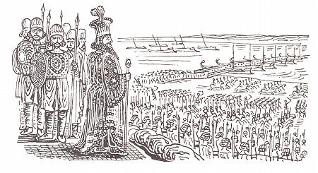
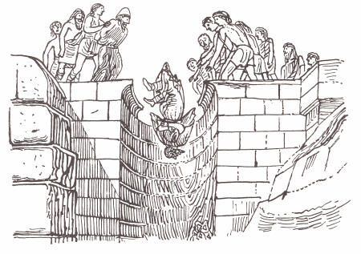
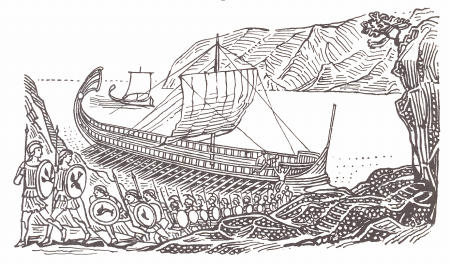

遠征の準備（一九）～（二五）
（一九）
そして、クセルクセスが征討の用意を進めていたところへ、その後三度目の、ある幻が睡眠中に現われ、マゴス僧達〔夢や奇現象の解釈がマゴス僧特有の職務であった〕はそれを聞いて、それが全世界を意味していて、彼が全人類をその臣下にするであろうと判じた。が、その幻というのはこうであった。クセルクセスがオリーブの若枝の冠をいただいていたところが、そのオリーブからの若枝が全地をおおうに至ったが、やがて頭上に横たわっていた冠が消え去ったように思われたのである。そして、マゴス僧がそう判ずるや、集まっていたペルシア人は直ちに一人残らず自分の領地へ引き上げ、いずれも我こそ懸賞の贈り物を手に入れたいと欲し、熱心に全力を命ぜられたことに傾倒したのであって、かくしてクセルクセスは大陸のすみからすみまで捜して軍勢の糾合を行なわせたのであった。
（二〇）
すなわち、彼は、エジプト平定以来まる四年間、軍勢と軍需品の用意を整え、そして、五年目が経過しつつあった時に〔前四八〇年〕、大軍をあげて征途に上ったのである。実際我々の知っている遠征軍で、これがともかく断然最大のものだったのであって、もって、ダレイオスのスキタイ遠征軍も、スキタイ人がキンメリア人を追ってメディア領を侵し、ほとんど全上アジアを征服して占拠し、ために、後にダレイオスがあだを報じようとするに至ったあの時のスキタイ人のそれも、伝説によるアトレゥスの子達のイリオン目ざしてのそれも、ボスポロスからヨーロッパへ押し渡って全トラケ人を征服したうえ、イオニア海〔アドリア海のこと〕まで下って南方ペネイオス川まで進撃したトロイ戦役以前のミュシア人およびテュクロイ人のそれも、これにくらべれば無に見えるくらいであった。
（二一）
それらの征服をすべて加えても、それらに加えるに他の行なわれたものをもってしても、たった一つのこれには及ばないのである。というのは、クセルクセスがギリシア攻略にアジアから率いて行かなかったどんな民族があろうか、また、大河巨川を除いて、どんな河水が飲まれてそれに不足させなかったか、といったぐあいなのである。
すなわち、軍船を提供した者もあれば、陸師に加わるように任命されていた者もあれば、騎兵を割り当てられていた者もあるし、馬匹運送船をふり当てられると同時に軍務にも服した者もあり、架橋用に長船を供出し、また、食糧と船の両方を提供するように指定された者もあった、というわけである。
（二二）
そして、まず第一次遠征軍〔巻六（四四）参照〕がアトスを回航しようとして難破したというので、約三年間アトスについてあらかじめ準備が進められていた。すなわち、ケルソネソスのエライオスに三段
橈船隊が停泊していたのであって、これを本拠として軍のありとあらゆる種類の人間が、ぞくぞく絶え間なく出かけて行ってはむちの下で掘り続けたものである。また、アトスの周辺に住む住民も掘り開いたのであって、ペルシア人であるメガバゾスの子ブバレスとアルタイオスの子アルタカイエスとがその作業を監督していた。けだし、アトスとは巨大で有名な海中へ突出して、これには人間が居住しているからである。そして、その山が内地の方へ終わっている所には、半島状の約十二スタディオン〔一スタディオンは約六〇七フィート〕くらいの地峡があって、それはアカントス人の海からトロネ前面の海へかけての平野と大きくない丘である。
そして、このアトスが終わっている地峡に、サネという一ギリシア・ポリスが所在するのであって、サネの向こうに、そして、アトスの区域内に所在する、当時ペルシア人が大陸から離して島に所属させようと考えたポリスとしては、ディオン、オロピュクソス、アクロトオン、テュットス、クレオナイなどというのがある。
（二三）
以上がアトスに所在するポリスであるが、異邦人はそれぞれ民族別にその地を手分けして次のように掘り開いた。サネ市のところで直線を引いたうえ、堀が深くなるや、最低部に立った者が掘るとともに、他の者がどんどん掘り出されて来る土を階段の上に立っている別の者へ渡し、また、それらの者は更に他の者へリレーするようにして、結局、それらは一番上の者に達し、そして、それらの者がかつぎ出して投げ捨てたのである。
ところで、フェニキア人以外の者は、堀の断崖が崩れ落ちるために、二重の労役をさせられた。というのは彼らは上口部の幅と底部のそれとを同じ大きさのものにしようとしたために、ややもすれば彼らにそういうことが起こったからである。
が、フェニキア人は他の仕事においてもそうであるが、特にこのような作業にも器用さを発揮した。すなわち、彼らはくじ引きで自分達のものになっただけの分をあてがわれるや、堀の上口部を堀そのものとなることになっていた部分の二倍にして掘ったものであって、仕事が
進捗するにつれてどんどんせばめていった。かくて、底になるとともに、作業は外の者達と等しくなるようにされたわけである。また、そこには一つの草地があって、そこに彼らの市場や交易場が設けられていて、ひいて粉にされたおびただしい穀類が絶えず彼らの所へアジアからやって来た。
（二四）
私が憶測して考え出したところによれば、クセルクセスがなぜその
開削を命じたかというと、それは自慢のためであり、威力を誇示するとともに形見を残そうと欲したからなのである。なぜならば、彼らとしては何ら労することなく船を引いて地峡を越えることができたのに、彼は二隻の三段
橈船が並漕されて航行するに足る広さの堀を、海路のために開削せよと命じたからである。また、それらの開削を命ぜられた同じ人間に、更に、ストリュモン川に架橋して両岸をつなぐ仕事も割り当てられた。
（二五）
で、彼は以上のようなことを行なっていたが、他面、フェニキア人とエジプト人に命じて、パピルスや白麻の橋に使う綱をも用意させ、また軍勢も駄獣もギリシア征討に駆られる途上飢餓におちいることがないように、兵糧の貯蔵も手配した。そして、色々の土地をせんさくしたうえ、最も地の利を得た所に、貨物船や渡船をもってアジアのいたる所からそれぞれ異なった地へ運搬して貯蔵することを命じた。
かくて彼らは大部分の糧食をトラケのいわゆる
白岬へ運び、また、それぞれ割り当てられて、ペリントス人のテュロディザへ運んだ者もあれば、ドリスコスへ輸送した者もあるし、ストリュモンにまたがるエイオンや、あるいはマケドニアへ持って行った者もあった。
征師ヘレスポントを渡る（二六）～（五六）
（二六）
他面、以上の者達が指定された労役に服して働いていた間も、糾合された全陸師はクセルクセスとともにカッパドキア在のクリタラを進発して、サルディスへ進みつつあった。クセルクセス自身に従って陸路を進撃することになっていた全軍は、その地へ集結するように布告されていたからである。
ところで、太守のうち何人が最も装備のすぐれた軍勢を率いて行って、王から懸賞の
賜物を受領したか、私は語ることができない。けだし、彼らがはたしてそれについて競争したのか、私には全然わからないからである。そして、彼らはハリュス川を渡ってプリュギアへはいった後、それを通り抜けてケライナイへ着いたのであるが、マイアンドロス川と今一つのマイアンドロスに劣らないカタラクテスという名を持った別の川の水源がわき出ているのはこの地であり、カタラクテスはケライナイの市場の中に発源してマイアンドロスへ注いでいる。プリュギア人の伝説によってアポロンに皮をはがれてつるされたといわれる、あのシレノス〔シレノスはディオニュソスの従者で、泉や流れの精であり、予言の力を持っているとされた。マルシュアスは横笛に巧みなことを誇り、アポロン神に競争をしかけ、その競技に負けたために皮をはがれた〕のマルシュアスの皮膚がつるされているのもそこである。
（二七）
この市でリュディア人アテュスの子ピュティオスが待ち構えていて、クセルクセス自身とその全王師を類のない歓待をもって供応し、かつ、軍資金を提供したいと申し出た。そして、ピュティオスが金を差し出すや、クセルクセスは居合わせたペルシア人に、ピュティオスとはどんな人物であり、また、どの位の富を所有して、それを申し出たのかと尋ねた。
彼らは答えて、
「王、これこそ、あなたの先考ダレイオスに黄金のプラタナスと黄金のぶどうの木を贈り物にした人であります。彼は今でも我々の知っている人間では王を除いて一番の長者であります」と言った。
（二八）
クセルクセスはその最後の言葉に驚き、親しく重ねてピュティオスに彼がどの位の富を持っているのかと尋ねたところが、彼は言うのに、
「王様、私はあなたに隠し立てもしなければ、自分の富を知らないということを口実にするようなこともしないでしょう。いや、私は知っていますから、それをあなたに正確に列挙しましょう。つまり、王がギリシア海さして下って来られる由を承るや否や、王に軍資として金を献じたいと思い、詳しく調べて見たのでありまして、数えて見て自分が銀は二千タラントンと、金はダレイコス・スタテルで四百万に七千欠けるだけ持っていることを発見したのです。そして、私はこれらを王に贈り物にする次第ですが、自分自身には奴隷と領地から十分な生計が得られるのです」と。
彼はそう言ったが、クセルクセスはその言葉をよろこんで言った。
（二九）
「リュディアの
賓友よ、余はペルシア領を立ち出て以来、卿を除いてほかには、今に至るまで余の軍勢に快く供応を申し出た者にも、また、余に謁して自発的に余に軍資金を寄贈しようと望んだ者にも、一人も出会ったことがない。が、卿は余の征師を大いにねぎらってくれたばかりではなく、ばくだいな富を提供してくれるので、余は卿にその返礼としてこういう報酬を与えよう。余は卿を余の賓友にする〔血族関係のやかましかった時代であるから、異国民がいわゆる賓友として同じ食卓につくことを許され同族なみに遇されるのは非常な優遇である。賓友は市民権は与えられなかったが、自由民として扱われた〕とともに、卿にとって四百万がなお七千欠けているというようなことでなく、むしろ、余に補充されて卿が丁度四百万持つことになるように、卿のために余の懐中から七千出してまる四百万スタテルにしてあげよう。卿が自分で所有してきたものは、そのまま自分で所有するが良い、そして、必ずいつでもそのままそういう人間であってもらいたい。このようにふるまっておれば、今も将来もそれが卿の悔いとなるようなことはないであろうから」
（三〇）
彼はこのように言ってそれを実行した後、たゆまず前進を続けた。そして、アナウアと呼ばれるプリュギア人のポリスと、塩を産出するある湖のかたわらを通過して、プリュギアの一大都市コロッサイにたどり着いた。そこではリュコス川が一つの土地の割れ目へ注ぎ込んで行方不明になっており、それから約五スタディオンぐらい経てある場所で再び姿を見せ、そしてこれもまたマイアンドロスへ注いでいる。軍勢はプリュギア人とリュディア人の境めざしてコロッサイを発し、キュドララ市に着いたが、そこにはクロイソスに建立された、しっかりした一石柱が立てられていて、碑文によって境界を知らせている。
（三一）
そして、プリュギアからリュディアへはいるや、道は二つに分かれていて、左へ行く道はカリアへ通じ、右へ行くのはサルディスへ通ずるが、後者を執って進めば、人はどうしてもマイアンドロス川を渡ったうえで、人々が
御柳と小麦粉から蜜を造ることを生業としているカラテボス市のかたわらを行かねばならないが、クセルクセスはこの道を進んで、一本のプラタナスを見つけ、その美を賞して彼は黄金の飾りを贈り物にするとともに、それを永久に続く管理人にゆだねたうえ、その翌日リュディア人のポリスへ着いた。
（三二）
そしてサルディスへ着いて、まず使者をギリシアへ派遣して、水と土を要求し〔降服の要求の象徴〕、あわせて、王のために供応の用意をせよとあらかじめ通告した。ただし、他のポリスへは全部送りながら、アテナイへもスパルタへも土の要求を送らなかった。そして、なぜ再度土と水の要求を送ったかというと、すべて前にそれを送ったダレイオスに献上しなかった者も、今度は恐怖から献上するであろうと信じきっていたからである。
そこで、まさしくそのことを的確に知りたいと思って派遣したわけである。
（三三）
かくして後、彼はアビュドスへ進撃しようと用意を整えたのであるが、別の者達はその間にヘレスポントでアジアからヨーロッパへ架橋していた。ところが、ヘレスポントのケルソネソスには、セストス市とマデュトスとの間にアビュドス対岸の海へ突入している一つのけわしい岬があり、そこでその後いくらもたたない頃に、将軍アリプロンの子クサンティッポスに率いられたアテナイ人の一部が、セストスの太守であったペルシア人アルタウクテスを捕えて、生きながら板の上にその手足を引き伸ばして、はりつけに処したものであるが、彼はエライオスにあるプロテシラオスの廟内へ婦人を連れて来させては、けしからぬことをしていた人物である。
（三四）
それで、この岬へ向かってアビュドスを起点として、フェニキア人は白麻の綱の橋を、エジプト人はパピルスのそれをといったぐあいに、その役目に当たった者達が架橋していた。そして、アビュドスから対岸までは七スタディオンある。しかも、その橋が掛け渡された時に、一大暴風がそれを徹底的に粉砕してこわしてしまったのであった。
（三五）
クセルクセスはそれを聞くや激怒し、むちをもってヘレスポントに三百のむち打ちの刑を科し、かつ、一対の足かせをその海へ投入せよと命じた。また、既に私の聞いたところによれば、それとともに彼は
烙印師まで派遣してヘレスポントに烙印を押させた〔ギリシアでは逃亡を企てた奴隷は前額に焼き印を押される刑に処せられた〕ということである。そして、ともかくむち打っている者達に、
夷狄的で暴慢無礼な次のようなことを言えと命じた。
「毒水よ、汝の主君は汝が彼から何の不正も受けざるに、彼に悪事を働きたる罪によって、この刑罰を汝に科したまう。しかして、王クセルクセスは、実に汝の好むと好まざるとにかかわらず、汝の頭上を渡るであろう。しかれど、汝は陰険にして塩からき川なれば、汝には確かに誰一人としていけにえをささぐる者なきも当然なり」と。
かくて、彼はそれらの者には海を懲罰することを命ずるとともに、ヘレスポント架橋の監督者の首をはねよと命じた。
（三六）
そして、そのありがたくない職務を任としていた者達がその通り行なっていた一方、別な
棟梁達が架橋に着手したのであるが、彼らはどうして架橋したかというと、黒海寄りの橋下には三百六十隻、もう一つの方の下には三百十五隻といったぐあいに、五十
橈船と三段
橈船を緊張した綱を支えるように、ポントスには直角になるが、ヘレスポントの流れに沿って連結したうえ、そして後非常に巨大な
錨をおろした〔もちろん、船の両側に錨がおろされたのであるが、ヘロドトスはその外側の方の大錨に注意をひいている〕が、一方のもののポントス寄りのそれらは内から吹き出てくる風のためであるし、他方の西およびエーゲ海寄りのものは西風や南風のためであった。
そして、彼はそれら五十
橈船や三段
橈船の間に、船の通れるすきまを残し、もって、何人でも欲する者が、はしけをもってポントスへはいることも、ポントスから出てくることもできるようにした。そうしておいて、彼らは木の
捲轆轤で綱を陸から引張ることによって緊張させたのであるが、今度はそれぞれの綱を別々に割り当ててではなく、それぞれの橋に二本の白麻綱と四本のパピルス綱を配分したのである。太さや美しさは同じであるが、比較的麻製の方がより重く、その一ペキュス〔ひじから小指まで約十八インチ〕の重量は一タラントンあった。
そして、水路に架橋されるや、彼らは丸太をひき切って橋幅に等しいものにしたうえ、その緊張した綱の上にそれらを秩序よく並置し、そして、順次並べたうえ、再びそれらを上でくくりつけた。それを済ますと、彼らはそだをその上に載せ、そだも秩序よく並べた後、その上に土を盛り、そして、その土もしっかり踏みつけてから、駄獣や馬が海を見おろして恐れるようなことがないように、両側に柵を設けた。
（三七）
橋の用意も、アトスの方のそれも整い、堀の口がふさがれないように、海水のあげ潮のために造られた堀の口の防波堤も堀そのものも、完全に出来あがったとの報に接するや、かくて、一軍は一冬過ごして春の到来とともに装備を整えたうえ、サルディスを発してアビュドスへ進軍した〔前四八〇年〕。が、それが進発しようとしたところへ、太陽がその上天の座から立ちのき、雲影もなければ申し分ない晴天であったのに姿を没したのであって、昼の代わりに夜になったものである。
そして、クセルクセスはこれを見、かつ知り、それが気がかりになったのであって、彼はマゴス僧にその現象が何のきざしになろうとするのかと尋ねたところが、彼らはギリシア人の予言者が太陽であるのに対し、彼らのそれは月であると言い、神がギリシア人にその都市の立ちのきを予示しているのであると告げた。
クセルクセスはそれを聞き、非常に歓喜して進軍にかかった。
（三八）
ところが、彼が兵を進めようとした時に、リュディア人ピュティオスが天の現象に恐れをなし、かつは先の賜り物で得意になり、クセルクセスのもとへ来て、
「王様、私はあなたにあることをお願いしてかなえていただきたいのですが、これは私にとっては一大事なのですが、あなたにとっては軽微なお力添えに過ぎないのです」と言った。
クセルクセスは彼がその要求したようなことを望もうなどとは毛頭考えもしないで、尽力してやろうと告げ、そしてともかく何を望むのか言えと命じたのであって、彼はそれを聞くや勇気を得て、どう言ったかというと、
「王様、ちょうど私には五人の子供があって、彼らはことごとく王に従ってギリシア遠征に加わらねばならぬことになっております。どうか、王様、こんなに年寄った私を哀れみたまい、私の子供のうち長男一人だけを、この地で私と財産の世話をするように、征師から免除して下さいますように。そして、他の四人はご自身と一緒にお連れくださって、お考えどおりになさったうえ、
凱旋なさいますように」と言ったのである。
（三九）
クセルクセスは非常に怒って、次のような言葉で答えた。
「このふらち者め。余が肉親の子や兄弟や縁者や友を率いてみずからギリシア討伐の征途に上ろうとするのに、お前は妻もろとも一家をあげて従うべき余の臣下である身をもって、あえて自分のせがれのことをとやかく言うのであるか。人間の情熱は、その耳の中に住んでおり、それは良いことを聞けば身体に歓喜を満たすが、それと反対のことを聞けば怒りでふくれ上がるものである、というこのことはよく承知しておくが良い。それで、お前が、りっぱな行ないをしたうえ、更にりっぱな申し出をしたあの時にお前は好意を尽くす点で、王をしのいだとはよもや誇りえないであろうが、今やお前があまりに厚顔無恥になったからには、お前がお前にふさわしい名誉ではなく、むしろ、それ以下の名誉を得るようにしてやろう。つまり、お前の歓待はお前と四人の子供を救うであろうが、お前はお前が最も愛着を持っているその一人の生命をもって罰を受けねばならないのだ」
彼はそう答えるや否や、直ちにそのようなことを執行する任を帯びていた者達に命じ、ピュティオスの長子を見つけ出してまっぷたつに断ち切らせ、断ち切ったうえ、一は道の右側に、他は左側にとそれらの半身を分けて横たえさせ、そして軍勢にその間を通過させることにした〔犠牲獣が二つに裂かれた間を通り抜けておけば、危害を被らないとするのがペルシア人の迷信で、それを実行したものである〕。
（四〇）
彼らがその通り行なうや、やがて軍勢は、その間を通り抜けたのであるが、先頭のさきがけを勤めたのは
輜重隊と荷馬であって、あらゆる種類の民族が入り交じった兵団がけじめもなくそれに続いた。そして、なかば以上過ぎた辺で、そこにある間隔があけられていて、以上の者が王と区別されるようになっていた。
かくて、全ペルシア人のうちから選抜された一千の騎兵がまず先駆し、そして、それに続いたのは一千の槍兵であるが、これらも全国民のうちの精鋭であり、彼らは穂先を下の地面の方へ向けていた。次は十匹のできるだけりっぱに飾られたいわゆるネサイオイ馬といわれる神馬であるが、なぜネサイオイ馬と呼ばれるかと言えば、メディア国にその名をネサイオンと称する大平原があり、実際この平原は巨大な馬を産するからである。そして、その十匹の馬の背後には、ゼウスの聖戦車が八匹の白馬に引かれて次に配置され、またそれらの馬の後には、車手が徒歩で手綱をしっかり握りしめながら従っている。けだし、どんな人間もその座席には登らないことになっているからである。
そして、その後にクセルクセスその人がネサイオイ馬の戦車に乗って続いたが、彼のかたわらにペルシア人オタネスの子で、名をパティランペスと称する車手が陪乗していた。
（四一）
こうして、クセルクセスはサルディスから進撃したが、彼は気分に動かされるままに戦車から
輦輿へと乗り換えた。彼の背後には、一千のペルシア人のうちでも最も優秀で、かつ門地の高い槍兵が穂先を普通にした槍を携えて従い、それからまた千人のペルシア人の精鋭からなる騎兵と、また、騎兵に続いて、更に残余のペルシア人から選抜された一万人が続いた。これらは歩兵であった。そして、そのうち千人は柄に石突の代わりに黄金の
柘榴をつけて他の者を取り巻いており、それら九千人は彼らの内側にいて銀の柘榴をつけていた。穂先を地へ向けていた者達も黄金の柘榴をつけていたのであって、クセルクセスのすぐ後に随従していた者達は金のりんごをつけていた。それらの一万人の背後に配置されていたのは一万人のペルシア騎兵であって、騎兵の後は二スタディオンも間隔が設けられたうえ、残余の雑軍が進撃した。
（四二）
軍勢はリュディアを出てカイコス川およびミュシア領へ向けて道を執り、そして、カイコスを出発し、カネ山を左にしてアタルネゥスを通ってカレネ市へはいった。ここからそれはテベ平野を突き抜けて、アトラミュッテイオン市やペラズギア人のアンタンドロスを通り過ぎ、また、イダ山を左にしてトロイ領へはいって行った。そして、まずそれがイダ山のふもとに一夜宿営したところが、雷を交えたあらしに襲われて、そこで相当おびただしい兵を失ったものである。
（四三）
それから、それがスカマンドロスにたどり着いた時、この川は彼らがサルディスをたって征途について以来水枯れで、兵および畜類の飲用にも足りなかった最初の川であったが、ともかく、この川まで来たところ、クセルクセスは「プリアモスの衛城」〔プリアモスはトロイ戦役当時のトロイの王で、五十人からの男の子と多くの娘を持っていたと伝えられている。彼が子ヘクトルの死体を返してもらいにアキレウスの陣屋へ夜間ひとりで行く場面の描写は、「イリアス」中の圧巻というべきであろう。ここの衛城はすなわちトロイのそれである〕なるものを見物したいと思ってそこへ登って行き、そして、見物を終え、かつ往時のことを色々詳しく聴取したうえ、彼はトロイのアテネへ千頭の牛をいけにえにささげ、また、マゴス僧はそれらの英雄を祭って
灌奠の儀を行なった。ところが、彼らがそれを済ましたところ、夜になって陣営は恐慌に襲われたのであった。そして、天明とともにそこを発し、ロイティオン市やオプリュネイオンや丁度アビュドスに接しているダルダノスなどを左手に、そして、ゲルギス・テュクロイ人を右手にして進んだ。
（四四）
クセルクセスはアビュドスにはいるや、全軍を見たいと欲した。そこにはあらかじめ彼のためにわざわざ白石の王座までが丘の上に造られていたので（アビュドス人が王の前からの命によって造ったものであるが）、そこへすわるや、彼は海浜を見おろして陸師も軍船もひと目に収め、また、見おろしているうちに船の競技が行なわれるのを見たいと望んだ。そして、それが行なわれてシドンのフェニキア人が勝利を得るや、彼はその競争にも軍勢にも満足であった。
（四五）
が、全ヘレスポントが軍船におおわれ、海辺もアビュドス平野もことごとく人間で充満しているのを見るや、かくてクセルクセスはわが身の幸福を祝福したのであるが、やがてむせび泣きを始めたものである。
（四六）
叔父のアルタバノスは彼のそうしたふるまいを知り、最初にクセルクセスにギリシア遠征を思いとどまれと勧告する意見を無遠慮に発表したその人が、クセルクセスが涙を流していると知らされるや、
「王よ、ご自身を祝福なさったあげくに泣いておられるとは、何と一瞬さきになさったことと今なさっておられることとが互いに非常に矛盾していることでしょうか」と言った。が、彼は言った、
「ともかく、もしこれだけいるこれらの者達のうち一人として百年後まで生き長らえる者がないとすれば、人間の全生涯などというものが何と短いものであるか、といったことを考えたので、ふびんに思う心がわしに起こったからである」と。
彼は答えて言った、
「いや、それだけではなく、我々は一生涯それよりもっと哀れな境涯にあるものです。というのは、かくも短い人生において、ここにいる者達であろうと、ほかの者であろうと、およそ人間の身で、それもたった一度ではなく幾度も、生よりもむしろ死を望む念にみまわれないほど、生来幸福であるというような者は一人もいないからです。つまり、不幸にも襲われるし、病気にも悩まされるものであって、それが短い人生を長いと思わせるのです。その結果、生存が悲惨なものであるから、死が人間にとって最も好ましい避難所となるのでありまして、神は我々に永遠の喜びの味にあずからせておきながら、その点でねたみ深いことがわかるのです」と。〔神は自分の享有している永遠不滅の幸福を人間にわかちはするが、それもほんのわずかの間で、すぐ人間は不幸や苦痛にみまわれる。この悲観的な人生観は実際は、ペルシア人の楽観的で積極的なゾロアスター信仰と相いれないものがある〕
（四七）
クセルクセスは答えて、
「ところで、アルタバノス、まさしく卿の定義しているとおりである人生については、我々は語ることをやめよう。また、我々は吉事に着手しようとしている時に凶事を思い起こすようなこともしないでおこう。が、この点をわしに言ってもらいたい。実際、もしあの夢に見た幻があのようにはっきりと現われなかったとすれば、卿は相変わらず以前のままの意見を抱いて、わしにギリシア遠征を許さなかったであろうか、それとも考えを変えたであろうか。さあ、この点をわしにはっきり話してもらいたい」と言った。
彼は答えて言った。
「王よ、あの現われた夢の幻がどうか我々両人の望むとおりの結果になるように祈ります。しかし、私としましては、ほかにも多くのことを考えるからですが、特に、何よりも大切な二つのものがあなたに不利なのを見て、まだ今に至っても相当心痛しているのでありまして、全く安心してはいられないのです」と。
（四八）
これに対してクセルクセスは次のように応じた。
「奇妙なことをいう人だ、卿はどんなものをその二つのわしに最も不利なものというのかね。卿には陸師が数において不足なのかね、そして、ギリシア軍の方が我々のそれよりも幾倍も多いだろうと思うのかね。あるいは、我々の水師が相手のそれに劣るのであろうか。それとも、それら両方ともそうなのであろうか。もし卿にとって我々の兵力の方がその点でずっと不十分であると考えられるのであれば、我々は一刻も猶予せず別な軍勢の糾合に取りかかれば良いからね」と。
（四九）
相手は答えた。
「王よ、少なくとも理解力を備えた人ならば、この軍勢にも船数にも不足はいわないでしょう。が、あなたがもっとたくさんのものを糾合なさるとしても、私のいう二つのものは、なおかえってそれだけ一層あなたに不利になるのです。そして、その二つのものとは地と海なのです。といいますのは、海にしても、私にはそう思われるのですが、あらしの起こった時にこの軍船を迎え入れ、庇護を与えて船を救うに足る港が一つもないのです。しかも、その港はたった一つだけというのではなく、ともかくあなたが通過して行かれる大陸の沿岸至る所になければなりませぬ。それで、あなたがそれらの広い港をお持ちでなければ、人間が事故を支配しないで、かえって事故が人間をほんろうするものと覚悟しなければなりませぬ。しかも、今話しているのは二つのうちの一つですから、もう一つの方をあなたにお話しましょう。
確かに、土地はそういう点であなたの敵方に回されているのです。たとえ何一つあなたに刃向かい抵抗しようとするものがなくても、人間は幸福には全く満足をもつことがないというわけで、あなたがどんどんつり込まれて進んで行き、向こうへ前進すればするほど、ますます土地があなたにあだをするようになるのです。それで、特に私があなたに申し上げるのは、誰一人刃向かう者がなくても、時の進むにつれてますます増大する土地が
飢饉を産み出すであろうと言うことなのです。人間は、ことを決するに際してはおよそ遭遇すべきあらゆる出来事を考慮に入れて小心であるが、一端そのことに臨めば大胆不敵である。というようにすれば、それにまさることはないでありましょう」
（五〇）
クセルクセスは以下のように応酬した。
「アルタバノス、確かに、卿のそれらについての見解はいずれも妥当であるが、しかし、何でもかんでも恐れるのも、何もかも等しく
斟酌するのもよろしくない。実際、当面していることに対して何もかも一様に斟酌することを欲するならば、卿はいつまでも何もすることができないであろうからね。むしろ、あらかじめあらゆる出来事を心配して、いやしくもどんな危険にも会わないようにするよりは、何事であれ勇気をふるって危険の半分には忍従する方が良いのである。また、卿が人の説には、ことごとく反対しながら安全な道を教えないとすれば、卿はその点でそれと反対の説を述べる者と同様に正しくないことにならざるをえない。それで、この点は甲乙がないが、人間の身をもってどうしてその安全な道を知ることができようか。わしはとうてい不可能であると思う。そこで、大概の場合、実行を望む者には利が生じ、あらゆることを考え合わせて気おくれする者にはあまり生じないのが普通である。ペルシア人の国威が伸張してどんなに力強いものになっているか、卿の見るとおりである。
そこで、もしわしの祖先のあの王達が卿と同じ考えを固執していたとすれば、あるいは、このような考えを抱かなくても、他の卿のような顧問を持っていたとすれば、卿はそれがここまで増進するのを見るようなことはなかったであろう。が、大きい国威は大きい危険によって握られるのが常であるというわけで、現に彼らは危険を冒すことによって、それをここまで進めたのであった。
かくて、我々も彼らにみならって、しかも、一年のうちの最も良い季節に、遊軍を行なうのであって、我々はどこでも飢饉にも会わなければ、その他何一つ不快な目に会わず、全ヨーロッパを平らげたうえ、再び国に帰って来るであろう。我々は自ら膨大な糧食を携えて進撃するだけではなく、また、我々が兵を進めようとしている相手は遊牧民ではなく、農耕民であって、ともかく、我々の攻略しようとするその国々や民族の穀類を手に入れるであろう、というわけである」
（五一）
それから、アルタバノスが言うのに、
「王よ、あなたが何事も恐れるなと命ぜられる以上、仕方がありませぬが、どうか私のいさめの言葉をお受け入れ願いたい。ことが多ければ、どうしてもそれについてはそれだけに一層話が長びかないわけにはいかないからです。カンビュセスの子キュロスは、アテナイ人以外の全イオニアをことごとく平定してペルシア人に朝貢するようにされました。ですから、私はあなたにおいさめ申し上げますが、それらの者がいなくても我々は敵に勝つことができるのですから、どんなことをしてもこれらの者をその祖国人攻撃に向けないようにしていただきたいのです。つまり、彼らが一緒に行けば彼らは母国を奴隷の境涯におとしいれることによって極悪人となるか、あるいは、その自由の獲得に加勢することによって至上の義人となるかのどちらかでなければなりませぬ。
ところで彼らが極悪人になるとしても、彼らが我々のためにもたらす利益は決して大きなものではないし、また、至上の義人となる場合には、彼らはあなたの軍勢に大損害を与える可能性を持っています。そこで、初めとともに終わりがすっかり透いて見えるものではないといわれたあの古いことわざが、なんと至言であるかも心に銘記される必要があります」と。
（五二）
それに対してクセルクセスは答えた。
「アルタバノス、我々はイオニア人については、卿もその他のダレイオスに従ってスキタイ人討伐におもむいた者達も彼らの証人であるように、全ペルシア軍の死活の権が彼らの掌中に握られるに至っても、しかも、彼らが毛頭不快な態度をあらわさないで、正義と信義を示した、という何よりも大きな証拠を持っているが、卿はそのイオニア人が変心しまいかと恐れており、ともかくその点で、卿は発表した意見のうち最大の誤りを犯しているだけではなく、彼らは妻子も財産も我が国に残しているのであるから、彼らが何か反逆的行為に出ようなどと考えてもならない。このようなわけで、決してこの点は心配せず、元気を出してわしの家とわしの王位の安泰を計ってもらいたい。わしは皆のうちで卿だけにわしの
王笏を託するのだからね」
（五三）
このように言って、アルタバノスをスサへ送り返したうえ、クセルクセスはペルシア人のうちの最も名ある者達を呼びにやった。そして、彼らが出伺するや、彼らに次のように告げた。
「ペルシア人よ、余が卿らを招集したのは卿らが勇士となって、これまでペルシア人によって成し遂げられた偉大な勲高い業績をはずかしめないようにしてもらいたいからである。いや、我々がかく骨折っているのも万人の公共的福利のためであるから、我々は一人一人でも、また、全部ひとかたまりとなっても懸命に力を尽くそうではないか。そして、余の聞くところによれば、我々が攻略しようとしているのは武勇にひいでた者達であり、それらを制圧すれば、人間界にはもうそれ以外に我々に刃向かう軍勢はなくなるであろうから、余は卿らに命ずる、力戦奮闘して最後まで戦え、と。が、差し当たりペルシア国の守護神達に祈願をこめたうえ押し渡ることにしよう」
（五四）
その日は彼らは渡る用意に過ごし、そして、翌日になって、彼らは橋上にあらゆる種類の香をたき、かつ、道には
桃金嬢をまいて、朝日の登るのを見ようと欲して待っていた。
そして、太陽が昇るや、クセルクセスは彼がヨーロッパの
涯に達するまで、彼にその遠征を中止させるようなことが決して起こらないようにと、黄金の杯から海へ
灌奠を注ぎながら天日に祈った。
そして、祈願をおわると、その杯と黄金の混酒鉢と彼らのいわゆるアキナケスというペルシア刀〔切るよりもむしろ突き刺すのに用いられた三十センチくらいのまっすぐな短剣で、腰につるされていた〕をヘレスポントへ投じた。彼がはたしてそれらを天日に献じて海中へ投じたものか、それとも、彼がヘレスポントをむち打ったことを後悔して、その償いとして海に贈り物をしようとしたものか、私は正確に判定することができない。
（五五）
そして、彼がそれらの行事を済ますや、歩兵と騎兵の全軍は片方のポントス寄りの橋により、駄獣と使丁団は、エーゲ海寄りのそれによって渡り始めた。まず、一万のペルシア人が残らず冠を着けて先頭に立ち、あらゆる種類の民族から混成された兵がそれに続いた。その日はこれらの者であったが、翌日には騎兵と穂先を下へ向けた者達が、これらも帯冠して先鋒となり、聖馬と神車がそれに続き、次いでクセルクセスその人と槍兵と千人の騎士が従い、残余の軍勢がそれに続いた。同時に、軍船もいかりを抜いて対岸へ向かった。もっとも、私は王が一同のしんがりとなって渡ったということも前に聞いたことがある。
（五六）
クセルクセスはヨーロッパへ渡るや、軍勢がむち打たれつつ渡っているのをながめていた。そして、彼の軍勢は一時も途絶えず六日六晩渡り続けたものである。
その時の話に、クセルクセスが既にヘレスポントを渡ったところ、一ヘレスポント人が、
「おおゼウスよ、一体なぜあなたは一ペルシア人の姿になり、そして、ゼウスではなくクセルクセスという名を帯びて、全人類を率いて来てギリシアを滅ぼそうとなさるのですか。確かに、それらの者がいなくても、あなたにはその力がおありになったでしょうに」と言ったそうである。
ヘレスポントよりテルマまで（五七）～（一三七）
（五七）
残らず渡り終えるや、彼らが進路につこうとしたところ、彼らに一大前兆が現われたのであるが、推測できたにもかかわらず、クセルクセスはそれを全く意に介しなかった。すなわち、馬が兎を産んだのである。実際、クセルクセスはこの上なく威風堂々とギリシア討伐軍を進めようとしていたが、その同じ場所へ命からがら逃げ帰って来るであろうという風に解釈すれば、それが容易に推定できた次第である。もっとも、彼がサルディスにいた時にも、彼に今一つ不思議な前兆が起こったのであった。すなわち、
騾馬が男女両性を兼備した
驢馬を産み、そして男性のそれの方が上部にあったのである。
（五八）
彼は両方とも全く意に介さずに彼の陸師を伴い進撃した。そして、水師の方は陸師と逆の方向を執り、ヘレスポントの出口へ向かって陸沿いに船を進めた。けだし、それはサルペドン岬に着こうと西へ船を進め、そこで彼が到着するのを待てとあらかじめ命ぜられていたからである。
そして、陸師の方は大陸上を東および日の出の方角へ進路を執り、アタマスの娘ヘレ〔一般の伝説によれば、ヘレは継母に殺されようとして、翼ある黄金の毛を持った羊に乗って逃げたところ、ヘレスポントすなわち今のダーダネルス海峡の上空でめまいを起こして墜落し、それにちなんでその海がヘレスポント（ヘレの海）と呼ばれるに至ったという〕の墓を右手に、カルディア市を左にしてケルソネソスを突き進み、アゴラと称するポリスの中を通り抜けた。そして、そこからメラスと呼ばれる湾を曲がり、この湾名のもとにもなっていた、メラス川という、時の軍勢には不十分で足りない流れを持っていたその川を越えて西へ進み、アイオリス人のアイノス市やステントリス湖のかたわらを過ぎて、ついにドリスコスに到達した。
（五九）
ドリスコスはトラケの海岸にある大平野であって巨川ヘブロスがそれを貫流している。そこにはあのドリスコスと呼ばれる王室
要塞が構築されていたのであって、ダレイオスがスキタイ人征伐を行なったあの時以来、ダレイオスによってペルシア人の駐留軍がそこにおかれていた。かくて、クセルクセスはその地が兵を並べて人員を点検するのに好都合であると考えて、それに着手した。それで、提督達はクセルクセスの命を受けて、ドリスコスに到着していた全軍船をドリスコスに隣接する海岸へ移したが、そこにはサモトラケのサレ市とゾネ市が所在し、また、その末端は有名なセレイオン岬〔セレイオン岬（今のマクリ岬）はオルペウスがキコニアの女達に殺された所として有名〕である。そしてこの地はむかしキコネス人の領土であった。彼らはこの海浜へ船を着け、揚陸したうえ乾かしていた。他面、彼はその間にドリスコスで軍勢の人員点検を行なっていた。
（六〇）
ところで、各地の者がどれだけの人数を寄与して勢ぞろいしていたか（何人によっても伝えられていないので）、私は正確に語ることができないが、全陸師の総勢は合計百七十万であったようである。が、彼らがどうしてその数を数えたかというと、一万の人間をひと所に集め、これをできるだけ密集させたうえ、その外側に円周を描き、そして、それを描いてその一万人を退かせた後、その円周上に人のへそに達する高さの石垣を巡らし、それが済むと、別な者達をその構内へはいらせ、このようにして全部あまさず数えるまでその操作を反復したのである。そして、人員点検を終えるや、各民族ごとに配列した。
（六一）
征旅に従軍した者は以下のごとくであるし、ペルシア人の装束は次のごとくであった。彼らは頭上にはティアラスと呼ばれる、柔らかいフェルト帽をかぶり、身にはそでのついた多様な色彩を施した下着と、一見して魚のうろこのような鉄のうろこのついた
鎧を着け、足にははかまをはき、そして、普通の楯の代わりに杖細工のものを持っていた。そして背には、矢入れがつるされていた。また、彼らは短槍、大弓、
蘆の矢を持ち、そのほか、右ももの所に腰帯から短剣をさげていた。そして、彼らはクセルクセスの妃アメストリスの父オタネスを将と仰いでいた。往古彼らはギリシア人からはケペネスと呼ばれていたが、彼ら自身およびその隣国人にはアルタイオイと呼ばれていた。しかし、ダナエとゼウスの子のペルセウスがペロスの子ケペゥスのもとへ来て彼の娘アンドロメダをめとった時、彼にペルセウスと名づけた子供が生まれたのであるが、たまたまケペウスには男系の子供がなかったので、彼はその子供をその地に残したものであり、かくて、彼らは彼にちなんでその名を得たのである。
（六二）
以上のいでたちはペルシア風というよりは、むしろメディア風であるから、メディア人も以上と同じいでたちをして征途についていたわけである。
そして、メディア人はアカイメニダイ家の人であるティグラネスを将と仰いでいたが、彼らは往時、誰からもアリア人と呼ばれていたけれども、コルキスのメディアがアテナイからそれらのアリア人の所へ来るや、彼らもその名を変えるに至ったのである。これはメディア自身が自分達について伝えているところである。キッシア人は他の点では丁度ペルシア人と同じ身じたくで征師に加わっていたが、ただフュルト帽の代わりにずきんをかぶっていた。そして、キッシア人はオタネスの子アナプェスに統率されていた。ヒュルカニア人はペルシア人と同じ武装をして、メガパノスを将と仰いでいたが、この人はその後バビロンの太守となった人である。
（六三）
アッシリアの征討軍は頭に青銅のかぶとや一種形容し難い
夷狄風の編み物のかぶとをかぶり、エジプト人のそれに似た楯と槍と短剣を携え、ほかに鉄のこぶのついた棒を持ち、亜麻の
胴甲をまとっていた。彼らはギリシア人にはシリア人と呼ばれて来たが、
夷狄にはアッシリア人と呼ばれたものである。そして、アルタカイエスの子オタスペスが彼らを指揮していた。
（六四）
バクトラ人は頭にはメディア人のものに酷似したものをいただき、その国で用いる蘆の弓と短槍を持っていた。サカイ・スキタイ人は頭にはとがって直立した固いぼうしを着け、はかまをはき、その国特有の弓と短剣を携え、そのほかにサガリスと呼ぶ戦斧を持っていた。これらはスキタイ人であるが、ペルシア人はすべてのスキタイ人を全部サカイ人と呼んでいるので、彼らはアミュルギオイ・サカイ人と呼ばれていた。そして、バクトラ人とサカイ人を率いていた将はダレイオスとキュロスの娘アトッサとの間に出来たヒュスタペスであった。
（六五）
インド人は
木綿製の衣服をまとい、
籐の弓と籐の矢を携えていたが、それには鉄が付いていた。で、インド人の
扮装はこのようであったが、彼らはアルタバテスの子パルナザトレスの部下に配されて征途に加わっていた。
（六六）
アリア人〔これは先の（六二）アリア人（高貴さを意味するペルシア語に由来する全イラン人をさす）とは別で、巻三（九三）のアレイオイ人のことであろう〕はメディア風の弓を具備していたが、他の点ではバクトラ人式であった。そして、アリア人を率いていた将はヒュダルネスの子シサムネスであった。パルトイ人、コラズミオイ人、ソグドイ人、ガンダリオイ人、およびダディカイ人はバクトラ人と同じよそおいをして出征していた。そして、これらの者の采配を振っていたのはどんな人々かというと、パルトイ人とコラズミオイ人のそれはパルナケスの子アルタバゾスであり、アルタイオスの子アザネスがソグドイ人のそれで、アルタバノスの子アルテュピオスがガンダリオイ人とダディカイ人のそれであった。
（六七）
カスピア人は皮の衣をまとい、国産の
蘆の弓と小刀を携えて一軍に加わっていた。彼らの装備はこのようであって、彼らはアルテュピオスの兄弟アリオマルドスを将と仰いでいた。サランガイ人は染色された上着を着用して目立っていたが、ひざに達する靴をはき、メディア風の弓と槍を持っていた。そして、サランガイ人はメガバゾスの子プェレンダテスの配下に属していた。パクテュエス人は皮の衣を着用するとともに、その国で用いる弓と短剣をつけていた。そして、パクテュエス人はイタミツレスの子アルタウンテスを将と仰いでいた。
（六八）
ウティオイ人、ミュコイ人、およびパリカニオイ人はパクテュエス人と同じ装束をしていたが、何人が彼らに号令していたかというと、ウティオイ人とミュコイ人にはダレイオスの子アルサメネス、そしてパリカニオイ人にはオイオバゾスの子シロミツレスであった。
（六九）
アラビア人はゼイラという
外套をまとって腰ひもをしめ、右側にはつるをはずせばはね返るような長い強弓を持っていた。エチオピア人は
豹やライオンの皮を着込んで、四ペキュス以下ではない長いやしの葉柄で造られた弓を持ち、その外に短い
蘆の矢も持っていたが、それには鉄の代わりに彼らが印章を彫るにも用いる、とがらされた石がついていた。そのうえ彼らは槍を携えていたが、それには穂先としてとがらされた《かもしか》の角がついていた。また、彼らは節くれだったこん棒も持っていた。そして、身体は、出陣する際にその一半は石灰で、他の一半は赤褐色で塗り立てたものである。アラビア人とエジプトの上部に居住するエチオピア人を指揮したのは、ダレイオスとキュロスの娘アルテュストネとの間に出来たアルサメスであったが、ダレイオスは妃のうちで彼女を最もいつくしんで、打ち延ばされた金で出来た似像を作らせたものである。
で、エジプト上部のエチオピア人とアラビア人に号令していたのはアルサメスであった。
（七〇）
が、日の出の方角から来たエチオピア人（確かに、それら二種のエチオピア人が従軍していたので）は、インド人部隊に配置されていたのであって、彼らはその容姿においては少しも他方の者と異ならないが、ただその言葉と毛髪においてのみ違っていた。すなわち、東方産のエチオピア人の頭髪がちぢれていないのに対し、リビアから来た者は全人類のうち最も羊毛性の頭髪を持っているのである。それらのアジア産のエチオピア人は概してインド人と同じいでたちをしていたが、頭上には耳もたてがみもついた、はく製の馬の頭部をかぶっていて、そのたてがみは冠毛に代わる用をし、そして、馬の耳は硬直させていた。また、彼らは楯の代わりに鶴の皮を援護物としていた。
（七一）
リビア人は皮製の装衣を着用して進軍し、穂先を焼いた投げ槍を用いた。彼らはオアリゾスの子マッサゲスの命令に服していた。
（七二）
パプラゴニア人は頭上に編み物のかぶとをいただき、小楯と大きくない槍と、更にそのほかに投げ槍と短刀を携え、足にはすねの中程まで達するその国特有の靴をはいて従軍していた。リギュエス人、マティエネ人、マリアンデュニア人およびシリア人はパプラゴニア人と同じいでたちで従軍していた。これらのシリア人はペルシア人にはカッパドキア人と呼ばれている。ところで、パプラゴニア人とマティエネ人はメガシドロスの子ドトスの指揮を受け、マリアンデュニア人とリギュエス人とシリア人の将は、ダレイオスとアルテュストネの子ゴブリュアスであった。
（七三）
プリュギア人はちょっと異なっているにしても、パプラゴニア風に近似したいでたちをしていた。プリュギア人は、マケドニア人の説によると、彼らがヨーロッパ人となっていて、マケドニア人と一緒に住んでいたころには、ずっとブリゲス人と呼ばれていたが、アジアへ移住した後、その領土と同時に名前も変えてプリュギア人となったという。アルメニア人はプリュギア人の移住民であって、まさしくプリュギア人と同じ武装をしていた。これらはどちらも、ともにダレイオスの娘をめとっていたアルトクメスに統率されていた。
（七四）
リュディア人はギリシア人のそれに酷似した武器を持っていたが、リュディア人というのはもとマイオネスと呼ばれていたのであって、アテュスの子リュドスにちなんで、名を改めてその名前を得た次第である。ミュシア人は頭上にその国特有のかぶとをかぶり、小楯を携え、穂先を焼いた投げ槍を用いていた。彼らはリュディア人の植民であり、オリュンポス山〔これはミュシアのオリュンポスで、プロポンティスの西南にある山〕に基づいてオリュンピエノイと呼ばれている。そして、リュディア人とミュシア人を率いていたのは、ダティスとともにマラトンに侵入したアルタプレネスの子のアルタプレネスであった。
（七五）
トラケ人は頭にはきつねの皮を、身にはよろいを着け、更に色様々に色どられた
外套をまとい、そして、足とすねには
子鹿の皮のくつをはき、その他、投げ槍と小さいまる楯と小さな短剣を携えて従軍していた。彼らはアジアへ渡った後ピテュニア人と呼ばれるに至ったが、それまでは、彼ら自ら伝えているように、ストリュモン川のほとりに居住していたので、ストリュモン人と称されていた。そして、彼らの主張に従えば、テュクロイ人とミュシア人のために住み慣れた地から追い出されたという事である。そして、アジア在のトラケ人を指揮していたのはアルタバノスの子バッサケスであった。
（七六）
.........は〔固有名詞が脱落している〕、なめしていない牛皮の小楯を携えており、そして、各自二本のリュキア製の狩猟用の槍を持ち、頭上には青銅のかぶとをかぶっていた。その上に、それらのかぶとには青銅でできた牛の耳と角が添加されていたし、またその頂には前立ても付いていた。そして彼らはそのすねのあたりを紫の布切れで包んでいた。これらの者の国にはアレスの神託所がある。
（七七）
カバレエス人はマイオネス人であってラソニオイと呼ばれ、キリキア人と同じ装束をしていたが、私はこれについては、列記してゆくうちに、キリキア人の陣列の所へ来た時に、その時に、お知らせするであろう。ミリュアイ人は短槍を持ち、そして、衣服を留針で止めていた。彼らのうちにはリュキア弓を携えていた者達があったが、頭には皮製のかぶとをかぶっていた。ヒュスタネスの子バドレスがこれらすべての者を統率していた。
（七八）
モスコイ人は頭上には木製のかぶとをいただき、楯と短槍を持っていたが、それには巨大な穂先が付いていた。ティバレノイ人とマクロネス人とモッシュノイコイ人はモスコイ人と同じいでたちをして征師に加わっていた。
そして、これらの者達を引率して勢ぞろいさせていたのは誰々かというと、モスコイ人とティバレノイ人の将は、ダレイオスとキュロスの子のズメルディスの娘パルミュスとの間に生まれたアリオマルドスであり、マクロネス人とモッシュノイコイ人のそれは、ヘレスポントのセストスの太守をしていたケラズミスの子アルタウクテスであった。
（七九）
マレス人は頭にその国特有の編んだかぶとをかぶり、皮の小楯と投げ槍を持っていた。コルキス人は頭に木製のかぶとをかぶり、なめさない牛皮の小楯と短槍と、そのほかに小刀をおびていた。そして、マレス人とコルキス人を率いていたのはテアスピスの子パランダテスであった。また、アラロディオイ人とサスペイレス人と同じ武装をして遠征していたが、これらはシロミツレスの子マシスティオスの配下に属していた。
（八〇）
紅海方面から従軍した王がいわゆる強制移民を定住させた諸島の島民は、メディア人風に酷似した服装と武器を持っていた。これらの島民を率いていたのはバガイオスの子マルドンテスであるが、これはその翌年ミュカレで指揮中に戦死した人である。
（八一）
以上が陸師に服役し、そして、歩兵に編入されていた諸民族であった。ところで、その征師の指揮をしていたのはまさに上述の人々であって、それぞれ隊列を整えさせて人員を点検したのも、千人隊長や万人隊長を任命したのも彼らであるが、百人隊長や十人隊長は万人隊長によって任命された。また、そのほかに兵科別および各民族ごとの隊長もいた。ともかく、以上述べられた人々が将軍たちであった。
（八二）
そして、これらの者を統率し、かつ、全歩兵の総帥となっていたのは、ゴブリュアスの子マルドニオス、ギリシア遠征反対の意見を提出したアルタバノスの子のトリタンタイクメス、およびオタネスの子ズメルドメネス〔ヘロドトスはどこにもオタネスが何らかの意味においてダレイオスの兄弟であったとは述べていないのであるから、「オタネスの子ズメルドメネス」は訳者がカッコに入れた文章の後へ来るのが当然だと信ずる〕（これら両人はダレイオスの兄弟の子供であってクセルクセスにはいとこに当たっていた）、ダレイオスとアトッサの間に生まれたマシステス、アリアゾスの子ゲルギスおよびゾピュロスの子メガピュゾスであった。
（八三）
これらの者があの万人隊〔巻七（四一）参照〕以外の全歩兵の将軍であった。そして、そのペルシア人から選抜された万人隊を統率していたのはヒュダルネスの子のヒュダルネスであったが、これらのペルシア人がなぜ「不滅隊」と呼ばれていたかというと、彼らのうち一人が死か病のためにやむなく脱落した場合には、別な人間が選び加えられて、一度も一万以上にも以下にもなることがなかったからである。また、全員を通じてペルシア人が最もきれいに飾っていたし、かつ、彼らが断然最も勇敢であった。彼らは前に述べたような装束をしていたが、また、そのほかに、彼らは多量の黄金をふんだんに身に着けている点においても目立っていた。彼らはほろぐるまを伴って行ったが、それには
妾や多数の、かつ身支度のよい召使を乗せていた。彼らの糧食は、他の兵とは別にラクダや駄獣がこれを運搬した。
（八四）
他面、以上の諸民族は騎兵として服役したが、全部がことごとく騎兵を出したというのではなく、ただ以下に列記するものだけである。ペルシア人はその歩兵と同じいでたちをしていた。異なっていたのは、彼らの一部の者が頭上に打ちのばされた青銅や鉄で作られたものを持っていた点だけである。
（八五）
また、あるサガルティオイ人と呼ばれる遊牧民があるが、これは種族としておよび言語においてはペルシア人に属し、装束はペルシア人のそれとパクテュエス人のそれとの中間的なものとされていたものを着用している。彼らは八千の騎兵を提供していたが、彼らは短刀以外には青銅の武器も鉄のそれも所有しないならわしになっており、ただ皮ひもで編まれた輪綱を使用している。彼らはこれを頼みにして戦場に臨むのであるが、これらの者の戦いぶりはというと、敵と遭遇するや、彼らは端に輪のあるその綱を投げ、そして、馬であれ人間であれ、何物であろうとその命中するものを自分の方へ引き寄せるのであって、相手はそのわなにからまれて殺されるのである。
彼らは以上のように戦うのであるが、ペルシア人のかたわらに配列されていた。
（八六）
メディア人の騎兵は丁度歩兵におけると同じいでたちをしていたし、キッシア人も同様であった。インド人は歩兵におけると同じ武装をしていたが、彼らは馬を乗りまわすとともに戦車も駆ったのであって、それらの戦車のくびきには馬や野生のろばがつながれていた。バクトラ人は歩兵におけると同じ武装をし、カスピア人も同様であった。リビア人は、彼らもまた歩兵におけると同じであったが、これらの者もことごとく戦車を駆ったものである。また、同様に、サカイ人およびパリカニオイ人も歩兵におけると同装であった。アラビア人は歩兵におけると同じよそおいをしていたが、彼らは一人残らず速力上決して馬に劣らないラクダに乗っていた。
（八七）
騎兵として従軍したのは以上の民族だけであるが、騎兵の数は、ラクダや戦車は別として、八万であった。ところで、他の騎兵はそれぞれの部隊に配置されていたが、アラビア人だけは馬がラクダを見るに耐えなかったので、馬に恐怖を起こさせないように、しんがりに当てられたので、一番しんがりに置かれていた。
（八八）
騎兵軍団長はダティスの子のハルマミツラスとティタイオスであったが、今一人の彼らとともに騎兵を統率すべきであったパルヌケスは、病気になってサルディスへ残された。というのは、彼らがサルディスを進発しようとしていた時に、喜べない惨事が彼を襲ったのである。
すなわち、馬上にあった彼の馬の脚下へ一匹の犬が駆け込み、そして、あらかじめそれを見なかった馬は驚き、棒立ちになってパルヌケスを振り落としたものであって、彼は墜落して吐血し、そして、病んで衰えたあげく、ついに再起の望みがなくなったのである。が、その馬は従者の手で彼の命令通りに処置されたのであって、彼らはそれを直ちにまず丁度主人を投げ落とした場所へ引いて行って、ひざの所でその足を切り払った。かくして、パルヌケスは将軍の地位を免ぜられた次第である。
（八九）
三段
橈船の数はというと、千二百七隻に上り、そして、それらを供出したのは以下の者達であるが、まずフェニキア人がパレスティナ在住のシリア人と合わせて三百隻を提供していた。彼らはどんなよそおいをしていたかといえば、頭上にはギリシア人風に酷似して作られたかぶとをかぶり、亜麻の胴甲をまとい、わくなしの楯と投げ槍を携えていた。
昔、これらのフェニキア人は、彼ら自身の主張によれば、紅海のほとりに住んでいたが、そこから陸を越えてシリアの沿海地に居をかまえたのであって、シリアのその地方、そして、エジプトに至るまでの地方はパレスティナと総称されている。
エジプト人は二百隻を提出していたが、彼らは頭に編み物のかぶとかぶり、大きいわくのついたへこんだ楯を持ち、海戦用の
矛と大きい
戦斧を携えていた。そして、彼らの多くは胴甲を着し、大ぶりの小刀を持っていた。
（九〇）
これらの者はこんないでたちであったが、キュプロス人は百五十隻を出し、どんないでたちをしていたかといえば、彼らの王達がターバンを頭に巻いているのに対し、他の者は一種のフェルト帽をかぶっていたが、その他の点では彼らはギリシア人と同じであった。が、キュプロス人自身が言っているように、彼らは以下のような数民族からなっており、サラミスやアテナイ出身の者もあれば、アルカディア産の者もあり、キュツノスから来た者も、フェニキア出の者も、エチオピアからの者もあるというたぐあいである。
（九一）
キリキア人は百隻を出していた。彼らも頭にはその国特有のかぶとをかぶり、楯としてはなめしていない牛皮で造られた
矛を持ち、羊毛の下着を着込んでいた。そして、各自二条の投げ槍と、エジプト人の小刀に酷似して作られた剣を携えていた。往古彼らはヒュパカイオイと呼ばれていたが、フェニキア人アゲノルの子キリクスにちなんでその名を得たのであった。パンピュリア人はギリシア風の武装をして、三十隻を提供していた。これらのパンピュリア人というのはアンピロコスおよびカルカスとともにトロイから離散した者達の子孫である。
（九二）
リュキア人は五十隻を出し、胴甲とすね当てを用い、
山茱萸の弓と羽毛のない
蘆の矢と投げ槍を携え、更に、肩には山羊皮を引っかけ、頭には羽毛で丸く縁どられたフェルト帽をかぶり、そして、短刀と
鎌を持っていた。リュキア人はクレテの出身であってテルミライと呼ばれていたが、アテナイ人パンディオンの子リュコスにちなんでその名を得たものである。
（九三）
アジア産のドリス人はペロポンネソスの出身であって、彼らはギリシア式の武具を持ち、そして、三十隻の船を供出していた。また、カリア人は七十隻を出し、その他の点ではギリシア人と同じ武装をととのえていたが、ただ鎌と短刀を持っていた。彼らがかつて、何と呼ばれていたかについては、この「歴史」のはじめの方〔巻一（一七一）参照〕に述べられた。
（九四）
イオニア人は百隻を供出し、ギリシア人らしいいでたちをしていたが、イオニア人は彼らがペロポンネソスの今日アカイアと称されている地に居住していた間は、また、ダナオスとクストスがペロポンネソスへ到来するまでは、ギリシア人のいうように、沿海地ペラズギア人と呼ばれていたが、クストスの子イオンにちなんでイオ二ア人と称したのである。
（九五）
島民が供出したのは十七隻であるが、のちには、あのアテナイ出身の十二ポリスのイオニア人と同じ根拠〔彼らがアテナイ出身者であって、アパトゥリア祭を祝ったことがその根拠とされたのである。巻一（一一七）参照〕によってイオニア族と呼ばれるにいたったが、これもペラズギア族であって、ギリシア人式の武装をしていた。また、アイオリス人は六十隻の船を提出し、彼らもギリシア人の主張のように、かつてはペラズギア人と呼ばれていたのであって、ギリシア人風なよそおいをしていた。アビュドス人以外のヘレスポント人（アビュドス人には王からその地にとどまって橋の守備者たるべき命令が与えられていたので）、その他のポントスから出征していた者は、船百隻を供出して、ギリシア人式な身なりをしていた。もっとも彼らはイオニア人やドリス人の移民である。
（九六）
そして、すべての船にはペルシア人とメディア人とサカイ人が戦闘員として乗り込んでいた。が、それらの船のうち速力の最もすぐれたものを供給したのはフェニキア人であって、フェニキア人のうちでもシドン人であった。すべて以上の者たちや彼らのうち陸師に編入されていた者たちは、それぞれその土地の出身者に統率されたのであるが、私はむりにこの「歴史」の叙述上そうする必要がないから、それらの者についてまで記述しないであろう。各民族の首領というのは記載するに値もしなかったし、また、各民族内には丁度ポリスの存在しただけの数の将軍がいたからでもある。また、ともかく全権を握っていて諸民族を各々
統帥していた将軍は、すなわち、彼らがペルシア人であったかぎり、私によって述べられたというわけで、それらの者は将として従軍したというよりは、むしろその他の者と同じく臣下として出征していたのである。
（九七）
他面、水師の提督はだれだれであったかといえば、ダレイオスの子アリアビグネス、アスパティネスの子プレクサスペス、ノガバテスの子メガバゾス、およびダレイオスの子アカイメネスであり、イオニア軍とカリア軍のそれはダレイオスとゴブリュアスの娘にできたアリアビグネスであった。そして、エジプト人を率いたのはクセルクセスと同じ両親から生まれたその兄弟アカイメネスであって、ほかの二人がその他の軍勢を指揮していた。また、集められた三十
橈船や五十橈船や軽舟や馬匹輸送用の長船はその数三千に達することがわかった。
（九八）
また、乗組員のうちともかくそれらの提督に次いでどんな人々が最も有名であったかといえば、シドン人としてはアニュソスの子テトラムネストス、テュロス人としてはシロモスの子マッテン、アラドス人としてはアグバロスの子メルバロス、キリキア人としてはオロメドンの子シュエンネシス、リュキア人としてはシカスの子キュベルニスコス、キュプロス人としてはケルシスの子ゴルゴスとティマゴラスの子ティモナクス、カリア人のうちではテュムネスの子ヒスティアイオスとヒュッセルドモスの子ピグレスとカンダウレスの子ダマシテュモスなどであった。
（九九）
ところで、そのほかの隊長のことは、私としてその必要がないから、アルテミシア以外には記載しないであろうが、私は女の身をもってギリシア討伐の征途に上ったこの人には、この上なく驚異の目を見張る者であって、彼女は夫の死後自分で僣主の地位を保持し、そして、青年の子供がいたにもかかわらず、勝ち気や男まさりの気性のために、まったく彼女にその必要がなかったのに征旅に加わっていたのである。で、彼女の名はアルテミシアというのであったが、彼女はリュグダミスの娘であって、血統は父系からいえばハリカルナッソス人で、母系ではクレテ人である。彼女は船五隻を提供して、ハリカルナッソス人、コス人、ニシュロス人、カリュドナ人を統率していた。そして、彼女の供出した船は、全軍のうち少なくともシドン人に次いで最も名声のある船であったし、また、彼女は全友軍中最もすぐれた意見を王に述べたのであった。彼女の統帥下にあったと私が列記した者たちは、ハリカルナッソス人はトロイゼン人であり、ほかはエピダウロス人であるといったぐあいに、私は断言するが、いずれもことごとくドリス族である。
（一〇〇）
水師の記述はそれだけとする。一方、クセルクセスは兵の人員点検および配列がおわるや、親しく自ら彼らの間に車を走らせて、これを検閲したいと思った。そして、間もなくその実行に移り、戦車に乗ってその間を通り抜けつつ、いちいち各民族に聞きただしたのであって、彼の書記はそれらの名を記録したものであり、騎歩両軍の端から端へたどり着くまでそれを続けた。そして、それを済ますと、船舶は海へ引き下ろされ、かくて、クセルクセスは戦車からシドン人の船へ乗り移り、金の日おいのもとにすわって、諸船の船首のそばを航行しつつ、陸師と同じように各船ごとに質問を発してはその名を記録させたのであるが、提督たちは船を海岸から四プレツロン〔一プレツロンは一スタディオンの六分の一で、約百フィー卜〕ほど離れた所へ持っていって投錨していたのであって、すべての船首を一列に陸の方へ向け、そして、戦闘員には戦いに臨むもののように武装させていた。そして、彼は船首と岸の間に船を進めて検閲した。
（一〇一）
これらの軍船の間の巡航もおわって下船するや、彼は、彼に従ってギリシア遠征に加わっていたアリストンの子デマラトスを召し寄せ、彼を呼んで次のように尋ねた。
「デマラトス、今卿に自分の聞きたいことを聞くのは、なんにしてもわしとしては満足に思っているのだ。卿は単に一ギリシア人であるばかりではなく、わしが卿からも、ほかのわしに謁見に来るギリシア人からも聞いているように、卿は決して最も劣小でも、もろくもないポリスの人である。そこで、今わしにこのことを話してもらいたいのであるが、はたしてギリシア人はわしに抵抗するに足る力があるのだろうか。わしの考えでは、たとい全ギリシア人およびそのほかの西方に居住する人間が糾合されても、彼らは敵として、わしの攻撃に耐えるに足る戦闘力を持っていないからね。しかし、それにしても卿がそれについてどんなことを言うか、卿の意見も聞きたいのである」
彼がそう尋ねたところ、相手は答えて、
「王様、私はあなたのために真実に服すべきでしょうか、それとも歓心をかうことに従うべきでしょうか」と言った。彼は彼に真実に従えと命じ、彼が決してそれだからといって従来以上に彼の気に入らなくなるというようなことはないであろうと告げた。
（一〇二）
デマラトスはそれを聞くや次のように述べた。
「王よ、どうしても真実にどこまでも服し、そして、人がうそを言って後日あなたから有罪の処刑を受けるといったことがないようなことを述べよとお仰せになる以上、申し上げますが、ギリシアにとっては貧困は常にずっと先天的につきまとっている道連れであるにもかかわらず、そこへ勇が持ち込まれ、智と強力な法の力で仕上げをしているのです。ギリシアは終始それを活用して貧困と圧制を駆除しているのであります。ところで、私はあのドリス地方に住んでいるすべてのギリシア人を賞揚しますが、今私が次のような言葉で言おうとしているのはその全部ではなく、ただスパルタ人だけなのですが、まず第一に、どんなことがあっても彼らがギリシアに奴隷的境涯をもたらす王の条件を入れるようなことは絶対にありえないのですし、それからまた、たとい他のギリシア人がこぞって、ことごとくあなたの味方になりましても、彼らはあなたに刃向かって戦うでしょう。もっとも、人数については、彼らにそんなことができるとは、いったいどれくらいいるのか、などとお聞きにならないで下さい。と申しますのは、たまたま出陣した者がよし千人でありましても、それらの者があなたと一戦を交えるでしょうし、それ以下であっても、それ以上であっても同じだからです」
（一〇三）
クセルクセスはこれを聞いて笑って言った。
「デマラトス、千人の人間がこんな大軍と戦うであろうなどとは、卿は何たることを言うのであるか。さあ、わしにいってもらいたい。卿は自分がそれらの者の王であったと称しているが、それでは卿は今すぐ十人の人間を相手に戦う心算があるかね。しかも、もし卿らの全市民がこぞって卿の断定するような人間であれば、少なくとも彼らの王である卿は、当然卿の国のおきてに従ってその二倍の敵に当たらねばならない。つまり、もし彼らが各自わしの兵の十人に匹敵するならば、わしは少なくとも卿が二十人に匹敵するのが当然だと思う。そして、そうなれば、卿の述べた言葉が正しいということになるであろう。
しかし、もし卿らギリシア人が卿やわしのもとへ会見によく尋ねて来るギリシア人のような人間であり、また、それぐらいの大きさでありながら、かくも大言壮語するものとすれば、今に見ているがよい、その口外された言葉はむだな広言となるであろう。要するに、どうかわしにあらゆる推測のできることによって観察させてもらいたい。どうして千人や一万人でも五万人でもが、少なくともそれらが全部等しく自由人であって独裁者に統御されていないかぎり、このような大軍に対抗することができようか。確かに、かりに彼らが五千人であるとすれば、我々は彼ら一人について千人以上であることになるだろうからね。
つまり彼らが我々式に一個人に統帥されておれば、彼らはその人を恐れて自分等の本性以上に勇敢となり、また、むち打ちにしいられて少数をもって多数に突進して行くであろうが、自由に放任されれば、そのどちらもしないであろう。また、わしとしては、たといギリシア人が人数において等しいものにされても、彼らはとうていペルシア人だけとも戦えないであろうと思う。むしろ、その卿の言っているようなことは、もっとも確かにたびたびではなくまれにではあるが、我々の方に見受けられるのである。現にわしの護衛の槍兵を勤めているペルシア人の中には、進んでギリシア人三人を同時に相手にして戦う者がいる。卿は彼らのことを知らないから大変な愚言をもてあそんでいるわけである」
（一〇四）
それに対してデマラトスはいった。
「王よ、初めから私には、真実のことを話せば私の話があなたのお気に召さないことはわかっていたのです。が、あなたがこれ以上本当の話はないといったことを語れと強要されたものですから、私はスパルタ人の模様をお話した次第です。それにしても、私が今現に何と彼らに愛着を持っているか、王ご自身が最も良く知っておられます。彼らは私から栄位も父祖代々の特権も奪い去って、私を祖国のない亡命客にしてしまったのでありまして、あなたの父君が迎え入れて私に生計も住居も恵んで下さったのですからね。
ところで、思慮ある人間が示される好意にそむかず最大の感謝を寄せるのは当然なことです。が、私としましては十人の人間と戦うことができるとも、二人の人間と戦いうるとも言ってはいないのでありまして、できればただの一人とも戦いたくはないのです。
しかし、どうしても必要であれば、あるいはなにかこと重大な戦いへ駆り立てられる場合には、私はどんな人にも劣らず潔くそれらの各々ギリシア人三人に匹敵すると称している者と戦うでありましょう。スパルタ人も同様でありまして、一騎討ちの戦いではどんな人間にも劣りませぬし、また、集団となれば全世界の人間で彼らにまさる者はいないのです。それは彼らが自由ではありますが、なにからなにまで自由であるというのではないからなのです。すなわち、彼らの上には法という支配者が君臨し、彼らはあなたの民があなたをおそれるよりもはるかより以上に、それを恐れているのです。
そうなのです、彼らはそれの命ずることでさえあれば何事でも遂行するのです。しかも、その命令はいつも同じでありまして、敵がいかに多数の人間であっても、これにうしろを見せて戦いから逃げることを許さず、否、あくまで持ち場に踏みとどまって勝たずんば死すべし、というのであります。しかし、あなたが以上の私の言葉をもって愚言をもてあそんでいるとお考えになるのでしたら、今はしいられるままに申し上げたのですが、むしろ私は今後は口をつぐんでいたいと思います。それにしても、王よ、どうか御意の通りになりますように」
（一〇五）
で、彼はこのように応答したのであるが、クセルクセスは哄笑にまぎらして少しも怒らず、優しくいたわって彼を去らしめた。そして、彼との会談を終えた後、クセルクセスはそのドリスコスにメガドステスの子マスカメスを太守に任じて、ダレイオスに任命された者を免職するとともに、トラケを通ってギリシア討伐の兵を進めた。
（一〇六）
彼が後に残したマスカメスは、クセルクセスが彼自身あるいはダレイオスによって太守に任ぜられたあらゆる者のうち最もすぐれた人物であるとして、彼だけに賜わり物を贈ったというような人であったが、しかも、彼は毎年賜わったのであって、クセルクセスの子アルトクセルクセスもマスカメスの子孫に同じことをした。というのは、この遠征よりはるか以前に、太守がトラケやヘレスポントの至る所に設けられていたところ、トラケおよびヘレスポントのそれらすべての者が、ドリスコスのこの人を除いて、全部この遠征後ギリシア人のために追い出されたのに、ドリスコスのマスカメスは、幾多の者が試みたにもかかわらず、だれひとりいまだかつてこれを撃退することができなかったのである。このために、彼には賜わり物が絶えず時のペルシア王から贈られたのである。
（一〇七）
もっとも、クセルクセスはそれらギリシア人のために追い出された者を一人としてりっぱな人物とは見なさなかったのに、エイオンのボゲスだけは例外としたのであって、彼はこの人を賞揚してやまず、またペルシアに彼の死んだ後に生き残っていたその子供等には、ボゲスがそれほどまで大いに激賞するに値するというわけで、この上ない栄誉を与えたものである。彼はミルティアデスの子キモンに率いられたアテナイ人に攻囲された時、彼としては城下の盟を結んで抜け出し、アジアへ帰ることができたのに、王におくびょうのため生き長らえたと思われることを恐れて、そうすることを欲しないで、最後まで持ちこたえたのであって、もはや城内の糧食も尽きるや、彼は大積みの
薪を山と積み上げておいて、その妻子、
妾、召使を殺したうえ火中に投じ、そして後市中の全金銀を城壁からストリュモン川の中へ散布し、そして、そうしたうえ身を火中に投じたのであった。
かくて、彼がなお今に至ってもペルシア人に賞揚されているのはもっともな次第である。
（一〇八）
クセルクセスはドリスコスをたってギリシアへ進軍を続けたが、その途上にあった者たちは、どんどんこれを強制して征旅に加わらせた。つまり、先にも私が述べたように、テッサリアに至るまでの地はメガバゾスと次いでマルドニオスに平定されて、ことごとく隷従させられ、王の君臨下に朝貢していたからである。そして、彼はドリスコスから進撃してまずサモトラケ人のとりで〔当時諸島は対岸の大陸上の沿岸に領地を擁して要害を築いた〕を通過したが、その西端に位置するのがメサンブリアと名づけられるポリスである。その次がタソス人のストリュメ市であって、それらの中間をリソス川が貫流しているが、これは当時クセルクセス軍に水を供するに足りないで涸れるに至った。この地は今日ではプリアンティケであるが、往時はガライケと呼ばれていた。しかし、最も正しい根拠によれば、これもまたキコニア人のものである。
（一〇九）
リソス川の
涸れ上がった河床をわたって、マロネイア、ディカイア、アブデラといったギリシア人のポリスを通り過ぎた。で、これらを通過するとともに、マロネイアとストリュメの間に横たわるイズマリス湖、トラウオスおよびコンプサトスという二つの川が水を注いでいるディカイアに近いビストニス湖、といったその近辺の有名な湖も通過した。アブデラの近くにはクセルクセスの通った名ある湖は一つもないが、海へ流れ込むネストス川は彼の渡った川である。それらの地に次いでタソス人の本土上の諸市を通過したが、それらの一つにはその周辺おそらく約三十スタディオン程の湖があって、魚介類が多くひじょうに塩分に富んでいた。水を飲まされた駄獣だけでこれをからしたものであるが、その市の名はピステュロスというのであった。かくて、これら沿岸のギリシア人の諸市を左手にしてそのかたわらを通過したのである。
（一一〇）
そして、彼が通過した地のトラケ人の種族にどんなのがあったかといえは、パイトイ人、キコニア入、ビストニア人、サパイオイ人、デルサイオイ人、エドノイ人、サトライ人などがあった。以上のうち海辺の住民は船に乗って従軍したが、彼らのうち私の列記した内地の住民は、サトライ人を除き、ほかはことごとく陸路を従軍することを強制された。
（一一一）
そして、サトライ人は、我々の知っているかぎり、いまだかつてどんな人間にも隷従したことはなく、トラケ人のうち彼らだけが私の時代までずっと自由民の地位を持続しているのである。というのも、彼らがあらゆる種類の樹木と雪に深くおおわれた高山に居住し、かつ、戦いに卓越しているからである。
ディオニュソスの神託所を所有するのはこれらの者であるが、その神託所は最も高い峰の上にあって、その廟の予言者〔神託の意味を解説する任務をおびた者で、巫女が忘我の境に入って口ばしる託宣を整理してその意を明らかにした。これらの教僧は大きい政治上の力も持っていたようである〕はサトライ人に属するベッソイ人であり、神託を与えたのはデルポイにおけると同様、
巫女であって、何もそれほど不思議なこともない。
（一一二）
クセルクセスは上述の地を通過した後、それに続いてピエリア人の要害を通過したが、その一つはパグレスといい、他はペルガモスと称する。かくて彼はその方面をそれらの要害そのものに沿ってパンガイオン山を右手にしながら進路を執ったが、これは雄大で高い山であって、その山中にはピエリア人、オドマントイ人、ことにサトライ人の経営する金銀の鉱山がある。
（一一三）
そして、パンガイオン山のかなた、北風の方面に居住するドベレス人やパイオプライ人といったパイオニア人の所を通って西へ進み、ついにストリュモン川ならびにエイオン市に着いたが、まさにこれより少し前に私が述べていたあのボゲスがなお存命してこれを治めていた。このパンガイオン山のあたりの地は、ピュリスと呼ばれ、西方はストリュモンへ注ぐアンギテス川に達し、南方はストリュモンそのものに及んでいる。この川へマゴス僧はさい先よろしかれと白馬を殺していけにえをささげた。
（一一四）
そして、以上やそのほか数々の川をなだめる魔法をエドノイ人の「九路」で行なったのち、彼らはストリュモンがすでに架橋されているのを見て、その橋を渡って進軍したのであるが、その地が「九路」と呼ばれるのを聞いて、彼らはそこでそれだけの数の土地の人間の子女を生き埋めにした。もっとも、私の聞いているところによれば、クセルクセスの妃のマメストリスも老年になって、自分のために地下にいるといわれる神に返礼の謝意を表わそうとして、名門のペルシア人の子弟十四人を地中に埋めたというわけで、生き埋めにするのはペルシアの風習である。
（一一五）
軍勢がストリュモンを後に進撃するや、そこに日没の方角に向かって海岸が広がっており、彼らはそこに所在したギリシア人のポリスであるアルギロスを通過した。その地およびその上部はビサルティアと呼ばれる。ここからポシディオンの湾を左手に執って、いわゆるシュレゥス平野を横断し、ギリシア人のポリスであるスタギロス〔アリストテレスの生地として有名〕を通ってアカントスへたどり着いたが、あたかも私が前に列記した者たちと同じ海辺の住民には、水師に加わって出征させ、また、海辺から奥地の住民は陸師に従軍させて、それらの種族やパンガイオン川付近のすべての住民を服従させた。そして、クセルクセス王が兵を進めたその通路は、トラケ人がこれを破壊しもしなければ、それを耕して播種もせず、私の時代に至るまで大いに敬意を払っているのである。
（一一六）
かくて、アカントスに着くや、クセルクセスはアカントス人が戦役に尽力するのを見たり、また、その切り開かれた運河のことを聞いて、彼らを賞揚するとともに、彼らに賓友として遇する旨を布告し、かつ、メディア服を贈り物にした。
（一一七）
クセルクセスのアカントス滞在中に、たまたまその
開削の監督者アルタカイエスが病のために没したのであるが、この人はアカイメニダイ家の一人であって、クセルクセスに信任を得、また、（五王室ペキュスに足りないこと四ダクテュロスであったというわけで）体格においてもペルシア人中並びなく、それに大声ではどんな人間にも劣らなかった。そこで、クセルクセスはそれを大いに悲しみ、彼のために限りなくりっぱな葬送の儀を行なって葬り、全軍をあげてその墳墓を築きあげた。
また、アカントス人は神託に基づいてこのアルタカイエスを神人として祭り、その名によっていけにえをささげている。このように、クセルクセス王はアルタカイエスの死を哀悼したのであった。
（一一八）
が、たとえば、タソス人が本土上の彼らのポリスのためにクセルクセス軍を歓迎してもてなした時、市民のうち一番といってよいほど令名の高かったオルゲゥスの子アンティパツロスがその任に選ばれて、そのもてなしのために四百タラントンの銀が支出されたと彼らに報告したといったわけで、その軍勢を歓迎してクセルクセスをもてなしたギリシア人は全く悲惨な状態に陥り、ために、家宅を追い出されるに至ったほどであった。
（一一九）
ほかのポリスにおいても、当事者は大略それと同じ評価の報告を行なったものである。というのは、そのもてなしなるものが、ずっと前から予告され、そして、彼らとしてそれを重大視したので、ほぼ次のように行なわれたからである。
まず、彼らがそれを触れ歩く伝令から聞くやいなや、市民は市中の穀類を配分したうえ、だれも彼も何カ月も引き続き小麦粉や大麦粉を作ったものである。それから、軍勢歓迎のために高い代価を払って、できるだけりっぱな家畜を見つけ出してこれを飼育し、かつ、水陸の鳥をかごや池に養ったのである。また、金銀の杯や混酒鉢やそのほかすべて食卓上に並べられる物を作らせた。これらは王その人と、彼に陪食する者たちのために作られたのであって、残りの軍勢のためには糧食に当てられる物だけが整えられた。
また、軍勢が着くと、いつもクセルクセス自身の宿営に用いていた《とばり》が張られたものであるが、残りの軍勢は露営するのが常であった。
そして、食事時となるや、接待人は奔走に骨を折ったが、彼らは腹いっぱい食ってそこで夜を過ごしては、翌日になるとその《とばり》を取り払い、そして、器物や道具を手にしたうえ、一物も残さず携えて進撃を続けたものである。
（一二〇）
このようなわけで、アブデラ人メガクレオンの述べた言葉は当を得たものであって、彼はアブデラ人に勧告し、彼ら自身も妻女も全市をあげて彼らの市の諸廟へはいって行って庇護人としてすわり、神々に嘆願して、彼らを保護して、せめて将来襲い来る災禍の半分を免れしめたまえと祈り、かつ、クセルクセス王が日に二度食事をとろうとは考えなかったというわけで、過去のことを神々に大いに感謝せよと説いたのである。
つまり、もし夕食とともに朝食まで用意せよと命ぜられたならば、アブデラ人にとってはクセルクセスの到来を待たないで逃げるか、あるいは、踏みとどまって全世界に比類ない悲惨な破滅を招くか、のどちらかよりほかにいたし方がなかったであろう、というわけである。
（一二一）
かくて、彼らは困窮しながらもなお指定された務めを果たしたものであり、一方、クセルクセスはアカントスからは水師の提督たちにテルマで待てと命じたうえ、船隊には自分とは別な進路を執って行かせたが、テルマとはテルマ湾に所在し、その海がこう名づけられているのもそれに基づいている。けだし、彼はその道が最短であると聞いていたからである。すなわち、ドリスコスからアカントスに至るまで、征師がどういう風に配列されて進んだかというと、クセルクセスは全陸師を三隊に分かち、そのひとつは水師と並んで海辺を進むように指定した。それで、この軍団の統帥者はマルドニオスとマシステスであったが、今ひとつの三分の一軍団は奥地を進めと命令され、トリタンタイクメスとゲルギスがそれを指揮した。そして、クセルクセス自身がともに進撃した第三分団は、それらの中間を進み、ズメルドメネスとメガビュゾスを将と仰いでいた。
（一二二）
そこで、水師はクセルクセスと分かれて行けと命ぜられ、アトスに造られた運河に船を突き進めるや、アッサ、ビロロス、シンゴス、サルテの諸市が所在する湾内に達した上、それから、それらのポリスからも兵を手に入れて、どんどんテルマ湾へ向かって船を進めたのであるが、トロネのアンペロン岬を回ってトロネ、ガレプソス、セルミュレ、メキュベルナ、オリュントスといったギリシア人のポリスを通り過ぎ、それらからも船舶と兵員を徴収した。ところで、その地方はシトニアと呼ばれている。
（一二三）
そして、クセルクセスの水師はアンペロン岬からともかくパレネとしては最も突き出ているカナストロン岬へ一直線に進み、そこからもポティダイア、アピュティス、ネアポリス、アイゲ、テランボ、スキオネ、メンデ、サネから船と兵を徴発した。つまり、これらはかつてプレグラと呼ばれ今ではパレネと称されている地方を占めているポリスである。
そして、その地方も通過して上述の場所へ船を進めたが、パレネに続いてテルマ湾に接している諸市からも兵を徴したものであり、それらの名はどうかといえば、リパクソス、コンブレイア、リサイ、ギゴノス、カンプサ、ズミラ、アイネイアなどである。そして、これらのポリスの所在する地方はなお今に至っても、クロッサイアと呼ばれている。私が諸市の列記に当たって最後においたアイネイアをあとにすれば、それからはもうすでに水師は当のテルマ湾やミュグドニア地方へはいって舟行していることになったのであって、船を進めて行くうちに上述のテルマに着き、シンドスとかアキシオス川にまたがるカレストラに達したのであるが、その川はミュグドニア地方とボッティアイア地方の境界をなし、後者に属する沿海の狭い地をイクナイとペラの両市が占めている。
（一二四）
かくて、彼の水師はアキシオス川や、テルマ市や、それらの間に介在する諸市の近在で王を待って布陣していたが、他方、クセルクセスと陸師はアカントスからテルマへたどり着こうと欲し、近道を執って内地を横断して進んだ。そして、パイオニアとクレストニアを突き抜けエケイドロス川目ざして進んで行ったが、この川はクレストニア人の所から発源してミュグドニア地方を貫流し、そして、アキシオス川べの沼地の所で注ぎ出ている。
（一二五）
彼らがその地方を進撃していた時に、ライオンが彼らの糧食運搬用のラクダを襲撃したものである。というのは、ライオンは夜になると彼らの巣をあとにして、平地に出没したものであるが、駄獣であろうと人間であろうとほかのものにはいっさい手を触れないで、ただラクダだけにとびかかったのである。しかし、私はいったい何が、ライオンに、ほかのものには手出ししないで、彼らが今まで見たこともなければためしたこともない動物の、ラクダだけを襲わざるをえないようにしているのか、その原因を怪しむ者である。
（一二六）
が、その地方には多くのライオンもいれば、あのギリシアへよく輸入される途方もなく巨大な角を持った野牛もいるのである。そして、それらのライオンがいるのは、アブデラ人の地を貫流しているネストス川とアカルナニアを貫流するアケロオス川を境とする地域である。すなわち、ネストスの東方のそこまでの全ヨーロッパのどこにも、また、そのほかの大陸中アケロオスの西方にも、人はライオンなるものを見ないであろう。ただ、それはそれらの川にはさまれた地に生ずるのである。
（一二七）
クセルクセスはテルマに着くや、そこに軍をとめたが、軍勢はそこに陣営を張り、その沿海地にどれほどの範囲にわたったかというに、テルマ市とミュグドニアを起点として、同じ一つの流れに水を合してボッティアイア領とマケドニアの境を成しているリュディアス川とハリアクモン川まで延々と連なっていたのである。かく、
夷狄軍は以上の地域に陣営を張っていたが、それら列記された川のうち、クレストニア人の所から流れ出ているエケイドロスだけが軍勢の飲用を満たすに足りないで、水が切れたのであった。
（一二八）
そして、クセルクセスはテルマからオリュンポスやオッサといったテッサリアの高々とそびえる峰を望見し、また、それらの間に狭い峡谷があり、それをペネイオスが貫流していると聞かされ、更に、そこはテッサリアへ通ずる道のあることも聞いて、奥地に居住するマケドニア人の地を通り抜け、ゴンノス市を通過してペライビア人の所へ向けて上手の道を進む心算でいたから、船を出してペネイオスの河口を視察したいと考えた。けだし、その進路が最も安全であると聞かされていたからである。そして、そう欲するとともに、その実行にも移ったのであって、何かこのようなことをしたいと思った時にいつも乗り込んだシドン人の船に乗り、陸軍はその地に残して、ほかの者たちにも出航せよと合図した。が、クセルクセスはそこへ着いてペネイオスの河口を見るや、大いに驚嘆し、案内を呼んで、その川をそらせて別な地点で海へ導出することができるかどうかと尋ねた。
（一二九）
ところが、テッサリアがむかし湖であり、もって、けわしい高峰に四方から囲まれていた、という伝説がある。すなわち、その東に面する部は互いにその
山麓を交錯しているペリオン山とオッサに閉鎖され、北風に面する方はオリュンポスによって、西に面する部はピンドスにより、そして、南天や南風に面する部はオトリュスによってさえぎられていたのである。そして、それら上述の山岳に包まれてテッサリアがくぼ地をなして横たわっているのである。
で、こうしてそれへほかにも数多くの河川が流れ込んでおり、そして、最も有名なものとしては、ペネイオス、アピダノス、オノコノス、エニペゥス、パミソスという五川であるが、ところで、これらはこう名づけられてテッサリアを四方からふさいでいる山々からこの平野へ集まって来て、全部がまず水を一つに混ぜ合わせたうえ、わずか一つのその挟い峡谷を通って海へ注ぎ出ている。そして、ひとたび混ぜ合わされるやいなや、そこからはもうペネイオスの名が他を圧してほかの河川を無名にしている。が、往時まだこの峡谷やはけ口がなかったので、これらの川は、また、それらの川のほかにボイベイス湖も、現在のような名を冠せられもせずに現在に劣らず流れていたのであって、その流れによってテッサリアを一面の海にしたと伝えられている。
ところで、テッサリア人自身の説によれば、ポセイドン〔ギリシア神話におけるゼウス大神の兄弟であって海の神であり、かつ、地震および馬の神でもあった〕がペネイオスの流れを抜けでている峡谷を作ったというが、もっともらしい説である。なぜかというに、何人でもポセイドンが大地を揺り動かし、そして、地震による割れ目がこの神のしわざであると信ずるほどの人は、それを見てもポセイドンのしわざであるというであろうから、割れ目は地震のしわざであるからである。
（一三〇）
案内者たちはクセルクセスから、ペネイオスにはほかに海への出口があるかと尋ねられるや、何もかもあらゆる事情に精通していたので、
「王様、この川には海へ達するのにこれを除いて、ほかには出口というものがございませぬ。テッサリア全体が山で取り囲まれているものですから」と言った。が、クセルクセスはそれに対して次のように述べたと言われている。
「テッサリア人は賢明だ。すると、彼らが屈服した時、彼らはほかのことも用心したが、特に、彼らが容易におとしいれうる、また、すぐに征服できる国を持っているというこの点を、昔から用心していたのだ。この川を堤防をもって峡谷からあふれ出させ、そして、それが現に流れ抜けているその水路からそらせ、もって、山以外の全テッサリアが水底に沈むようにするために、彼らの国土上に放流しさえすれば、ことは足りるであろうからね」
クセルクセスはアレゥアスの子等がテッサリア人であり、ギリシア人として率先王に身を投じたというわけで、彼らに関連してこのようなことを言ったのであるが、彼は彼らが全民族をあげて修交を申し入れたと思ったのである。そして、そういい、また、視察も終えて彼はテルマへ船をもどした。
（一三一）
かくて、三軍団のひとつがマケドニア道を
開削し、もって、それによって全軍がペライビア人の地へ突き進むようにしていたので、彼はピエリアに幾日も過ごしたのであった。ところで、土を要求しに〔降服の象徴〕ギリシアへ派遣されていた使者が、あるいは手をむなしくして、あるいは土と水を携えて帰って来た。
（一三二）
そして、それを献上した者にはどういうのがいたかといえば、テッサリア人、ドロピア人、エニエネス人、ペライビア人、ロクリス人、マグネシア人、マリス人、プティオティスのアカイア人、テバイ人、およびテスペイア人とプラタイア人を除いたそのほかのボイオティア人などであった。
これらの者に対して、
夷狄に挑戦したギリシア人は厳粛な誓いを立てたのであって、その誓言というのは、およそギリシア人の身でペルシア王に投降するのやむなきに至らないうちに、そうした者は、事態が彼らに好転した暁に、すべてそれらの者には、一割税〔収入や産物の十分の一を献ずるといったものではなく、裏切ったポリスを滅ぼして、住民は奴隷にするとともに、その全財産を没収し、それらの全収益の十分の一を神に献上するとの意味であろう〕をデルポイの神に献納せしめるというのであった。で、ギリシア人の間に行なわれた誓言というのはそれであった。
（一三三）
が、クセルクセスはアテナイとスパルタへは土の要求に使者を派遣しなかったが、なぜかといえば、先にダレイオスがまさしくその目的で人を派した際、その一方の者はそれを要求した人間を穴ぐらへ〔アテナイではアクロポリスの背後に罪人を投げ込む穴ぐらが設けられ、それには鉄のかぎが突き出ており、罪人は墜落の途中それに引き裂かれる仕組みになっていたという〕、他方の者は井戸へ投じて、そこから土と水を王の所へ持って行けと命じたからである。クセルクセスがそれを要求する人間を派遣しなかったのはそのためである。
 もっとも、使者にこのような仕打ちをしたために、アテナイ人にどんな災難が生ずることになったか、彼らの国土およびポリスが荒廃させられたということ以外には、私はいうことができないが、しかし、私はそれが原因でそうなったものとは思わない。
（一三四）
しかし、確かにスパルタ人はアガメムノンの使者タルテュビオスの怒りに襲われたのであった。というのは、スパルタにはタルテュビオスの廟があり、また、タルテュビアダイ家と呼ばれるタルテュビオスの子孫もおり、そして、彼らにはスパルタから派遣されるあらゆる使者の役目が特権として賦与されていたが、以上のことがあって以来、スパルタ人はいけにえをささけたが一向吉兆が得られなかったのである。そして、そういう状態が彼らに長い間続いたのであって、スパルタ人は困惑し、かつ、不運を悲しみ、民会もしばしば招集されて、だれかスパルタ人で、進んでスパルタのために身命を投げ出す者がないかという布告が行なわれることになった結果、血統もりっぱであったし、富においても一流に達するスパルタのアネリストスの子スペルキアスとニコラオスの子ブリスが、自ら進んで身を呈し、スパルタで倒れたダレイオスの使者に対する償いをクセルクセスに払おうとした。かくして、スパルタ人はこれらの者を殺されるのが目的でメディア人の所へ派遣したのであった。
（一三五）
それらの人の勇気そのものも驚嘆に値するが、そのうえ、次のような言葉もまたそうである。すなわち彼らはスサへ向かう途中ヒュダルネスのもとへ来たところ、ヒュダルネスは生まれはペルシア人で、アジアの沿海民の将軍であったが、彼は彼らを歓迎して厚くもてなし、そして、歓待しながら尋ねていうのに、
「スパルタ人よ、いったいなぜ卿らは王と友情を結ぶのを避けるのかね。わしの様子をよく見れば、王がりっぱな人間を表彰することを心得ておられるのがわかるだろうからね。このように卿らも（彼からりっぱな人間であるとの信用を得ているのであるから）もし王に身を投じたならば、卿らは各自ギリシア国を賜わってその支配者となるであろう」と。
それに対して、彼らは答えて、
「ヒュダルネス、我々に関するご勧告は公平を欠いています。というのは、あなたは一方のものには経験を持っておられても、他方のものには無経験でいて勧告しておられるからです。つまり、奴隷の境涯は知り抜いておられるけれども、自由というものについては、はたしてそれが快適なものかどうか、まだご経験がないのです。もしそれをご経験になっておれば、あなたは我々に槍をもってだけではなく、
手斧までとってそのために戦えと勧告されることでしょうからね」と言った。
（一三六）
彼らはヒュダルネスにそう答えたのであるが、そこからスサへ上って行って王に謁見するや、まず、近衛の槍兵が彼らに強制して、王の前に土下座して王に拝礼せよと命じたけれども、彼らは人間を拝むのは彼らの国の習慣にもないし、また、そのようなことをするために来たのでもないというわけで、たとい彼らにまっさかさまに突き倒されても、決してそのようなことはしないであろうと言って承知しなかった。そして、それをがんばって拒絶するや、次いで彼らに、
「メディア王よ、スパルタ人は我々をスパルタで落命したあの使者の代償として、彼らの償いをするために派遣したのです」と、あるいは、ほぼそういった意味のことを申し入れたのであるが、クセルクセスは、そう言った彼らに大様に、自分はスパルタ人とは違うであろうと告げた。
つまり、彼らが使者を
誅殺することによって全人類に通用するおきてを破壊したのに対し、彼自身は自分が彼らにとがめ立てしているそのような行為はしないであろうし、また、それらの者を代償として殺すことによって、スパルタ人にその罪を許すこともしないであろう、というのである。
（一三七）
こうして、スパルタ人がこんな処置まで執ったので、スペルキアスとブリスはスパルタへ帰国したにもかかわらず、タルテュビオスの怒りは当時はおさまったのであるが、そののち長年月を経て、スパルタ人によれば、それがペロポンネソス人とアテナイ人との戦争中に喚起されたという。それは私には最も摂理的なことの一つであったと思われる。なぜならば、タルテュビオスの憤激が使者にふりかかり、そして、それがすっかり実現されるまでは決しておさまらなかったということは、正義の作用に過ぎなかったが、それがたまたまブリスの子ニコラオスと、兵員を満載した商船でもって漕ぎつけて、ティリュンス出のハリエイス人を征服したスペルキアスの子アネリストスという、その怒りのために王の所へ使いしたあの人達の子供等を襲ったそのことが、その怒りがもとで神の手によって行なわれたということは、確かに私には明白であるからである。
すなわち、彼らはスパルタ人に使者としてアジアへ派遣されたのであるが、トラケ王テレスのシタルケスとアブデラ人ピュテスの子ニュンポドロスに裏切られて、ヘレスポントのビサンテで捕えられ、そして、アッティカへ連れ去られてアテナイ人のために殺されたのであって、彼らとともにコリントス人アデイマントスの子アリステアスも命を奪われた。
ところで、以上は王の遠征後長年たったあとに起こったことであるが、私は前の話にもどることにする。
ギリシアの対策（一三八）～（一七一）
（一三八）
王の遠征はアテナイに討伐の兵を進めるという名目を持っていたが、実は全ギリシアを目当てに繰り出されたものである。そしてギリシア人はそのことをずっと以前から聞いていたが、全部が同じ観察を下していたのではない。すなわち、彼らのある者はペルシア王に土と水を献じ、
夷狄からは何の痛手も被らないであろうとして安心していたし、また、それを献じなかったある者は、ギリシアには数からいって侵入軍を迎えるに足る艦船もなければ、一戦を交えることを欲しないですすんでメディア人に味方する者も多かったので、一大恐怖に陥っていた。
（一三九）
そこで、私はどうしてもある見解を発表せざるをえないのであって、これは大多数の人から見れば、いとうべきものかも知れないけれども、それでも、私はともかく自分に真実だと思われるその所見を差し控えないであろう。
もしアテナイ人が切迫する危険に恐れをなして彼らの国を捨てて逃げ出すか、あるいは、放棄しないで踏みとどまるにしても、クセルクセスに身を屈して投降したとせんか、何人が海洋において王に抵抗して一戦をいどんだであろうか。
かくて、海上においてクセルクセスに刃向かう者が一人もなかったとすれば、確かに、陸においては次のようなことが起こったであろう。たといペロポンネソス人が城壁の胴着を幾重にも地峡部に張り巡らしたとしても、スパルタ人は、
夷狄の水師に相次いでそのポリスをおとしいれられる味方に、好んでではないが、やむをえず見捨てられて孤立させられ、孤立させられたあげく、目ざましい働きを発揮しても、結局、あっぱれな最期を遂げたことであろう。彼らはそんな運命に陥るか、あるいは、それ以前にそのほかのギリシア人もメディア人に屈服するのを見て、クセルクセスに城下の盟を乞うたことであろう。そして、このようにしてどちらにしてもギリシアはペルシア人に踏みにじられたことであろう。
要するに、私としては地峡部に張り巡らされた塁壁のもたらす利益については、王が一朝、制海権を握った場合に、それがどうなるか理解に苦しむのである。そして、現にアテナイ人がギリシアの救い主であったと主張する者は正しくないであろう。けだし、いずれの方向にせよ、彼らの
向背がよって掛かろうとしていたからである。
そして、むしろギリシアが自由国として残存することを望み、およそメディア人に屈していなかった残りの全ギリシア人を奮起させ、そして少なくとも神々についで王を撃退したのは、まさに彼らだったのである。デルポイから届いて彼らを恐怖に投げ込んだ恐れおののくべき神託も、彼らにギリシアを放棄することを納得させえなかったのであって、彼らはあくまで踏みとどまり堅忍不抜、国土の侵略者を迎えようとしたのである。
（一四〇）
というのは、アテナイ人は神託使をデルポイへ派遣して、託宣を請おうと欲したのであって、これらの者が神域でしきたりどおりの行事をすましたうえ、廟へはいってすわっていたところ、アリストニケと称するピュティアは彼らに次のような託宣を与えた。
おお哀れな者どもよ
何故坐するにや
家も
輪形の町のそびえたつ衛城も棄てて
地の涯まで逃れ往くべし
（町は）頭も幹躯も無事には残らず
いと下なる脚も
いな、手も胴の部も残されずして
見当らざればなり
そは火と猛り立つ軍神が
シリア育ちの戦車を駆り立てて
それをば打ち滅ぼすべければ
また、彼はおそらく汝のもののみならず
他の多くの城砦も打ちこぼち
今や恐怖に
慄き汗を流して突っ立てる
幾多の神々の廟宇を、貪り食らう火に与うべし
頂の屋根よりどす黒き血が滴り落つれど
こは避くべからざる凶いの前兆なり
いな、廟を立ち出で、心を禍いに浸すべし
（一四一）
これを聞いてアテナイの神託使はいたく悲しんだのであるが、その神託に予言された災難のために絶望していた彼らに、デルポイ人のうちではほとんど名声が最も高かった一人物アンドロブロスの子ティモンという者が、彼らに庇護人の手にするオリーブの枝をとって、その上で再び行って庇護人として神託を請えと忠告したのであった。そして、アテナイ人がそれを受け入れて、
「主よ、我々があなたの所へ携えて来ているこれらの庇護人の枝を尊重したまい、祖国について何かもっとよい神託を我々にお与え下さい。さもなければ、実際我々はこの聖域から立ち去らずに、死ぬまでもこのままここにとどまるでありましょう」と言ったところが、彼らがそう言ったのに対し巫女は彼らに、今度は次のような託宣を下した。
パラス〔アテナイの守護神アテネのこと〕は数多くの言葉と
密なる智謀を以て嘆願するも
オリュンポスのゼウスをなぐさむる能わず
然れど、予は今いちど金剛石もて打ち堅めし
この言葉を汝に告げん
凡そケクロプスの境と
聖きキタイロン窪地の内にある
爾余の者が征服されたる暁には
最後に遠眼利くゼウスは
ただ一つ木の塁壁をトリトゲネイア〔アテネ女神〕に与うべく
こは堅固にして
汝もその子らもその恩沢に浴すべし
とまれ、汝は騎士歩卒の大軍本土より来るを
拱手してまたず
寧ろ、
踵を
廻らし背を向けて退くべし
汝には今後再び刃向う機会もあるべければ
おお聖なるサラミスよ
汝は穀類があるいは播種され
あるいは穫り集めらるる時
女の生める子らを打ち滅ぼさん
（一四二）
これは彼らにとっては前のものよりも穏やかであったし、また、そう思われたので、彼らはそれを書き留めてアテナイへ引き上げた。そして、神託使が帰来して国民に報告するや、その神託の意をせんさくする意見がほかにもたくさん行なわれたが、以下のもそれであり、互いに最もくい違うものであった。比較的老年の者たちは、昔アテナイの衛城がさくをもって囲われていたというわけで、彼らには神が衛城の残存すべきことを予言したように思われると主張してやまなかった。で、一部の者はその「木のとりで」というのがその障壁に関連していると推定したのであるが、また、他方の者は神が船舶を意味していると主張して、ほかは顧みずにひたすらそれを
艤装せよと勧告して譲らなかった。ところで、「木のとりで」が船であると主張した者たちは、ピュティアの述べた
おお聖なるサラミスよ、
汝は穀類があるいは播種され
あるいは穫り集めらるる時
女の生める子らを打ち滅ぼさん
という最後の二行のために
頓挫させられたのであって、船が「木のとりで」であると論じた者たちの見解は、それらの言葉に関して、はたと窮した次第である。つまり、神託解説者はそれをもって、彼らが海戦の準備を整えたあげく、サラミス近辺で敗滅する宿命にあるというように解していたからである。
（一四三）
ところが、アテナイ人のうちに近時頭角を表わして一流の人間になった一人物があったが、彼の名はテミストクレスと言い、ネオクレスの子と呼ばれていた。この人は神託解説者の推定があやまたずその全意を尽くしてはいないと主張し、言うのに、
もしその語られた言葉が実際アテナイ人に適用されたとすれば、神託はその言葉のようなそんな穏やかな表現をもってしないで、少なくとも事実もしその住民がそこで最期を遂げる運命をになっているものならば、「おお聖なるサラミスよ」などとは言わず、「おお残忍なるサラミスよ」と言ったであろうと考える、と。
すなわち、むしろその神託を正解する者から見れば、神はそれによってアテナイ人ではなく敵軍のことを述べたというのであった。
したがって、「木のとりで」とはこれだというわけで、彼らに海戦の用意を整えよと勧告した。こうして、テミストクレスがアテナイ人に見解を打ち明けたところ、彼らは海戦の準備をすることを禁ずる、要するに、全然反抗の手もあげずにアッティカの地を捨ててどこかほかの地に居を定めるべきであると主張した神託解説者のそれよりも、その方が彼らにとってより望ましいと判断した。
（一四四）
またこのほかにも、これより先に、アテナイ人がラウレイオンの鉱山から彼らのふところにはいったばくだいな富を国庫に擁していて、まさにこれを分かち合って各自一人当たり十ドラクマを受け取ろうとした時に、テミストクレスの提出した意見は時宜に適した最もすぐれたものであった。当時、テミストクレスはアテナイ人を説得してその分配を中止させたうえ、その金でもって、私は対アイギナ戦を意味するのであるが、戦争のために二百隻の船舶を建造させたものである。つまり、この戦役が行なわれ、もって、アテナイ人を海国民となることを余儀なくさせて、当時ギリシアを救ったのである。もっとも、それらの船はその建造された当の目的には用いられなかったけれども、ギリシアにとって必要な目的に用をなすものとなったのである。
かくて、アテナイ人はすでに建造されていたそれらの船を所有していたのであるが、実に、それらのほかに船舶を追加建造する必要があった。そして、彼らはその神託を受けた後に評議を凝らし、神意を受け入れて、ギリシア人のうち欲する者たちとともに全国民をあげて、水師をもって侵入する
夷狄を迎えることに議を決した。
（一四五）
で、以上の神託がアテナイ人に与えられていたが、ギリシア人中ギリシアについて相当りっぱな考えを持っていた者たちがひと所に集まって〔前四八一年の秋、彼らはコリントス地峡に集まったといわれる〕、互いに論議と誠意をかわした結果、彼らの評議一決して、まず何よりも先に相互間の争いをやめて敵意や恨みを捨てて和を結ぶことに定めた。しかも、あるほかの者たちの間にも戦いが交えられていたが、ともかくアテナイ人とアイギナ人との間のそれが最も大きかった。それから、クセルクセスが軍を率いてサルディスにあると聞いて、彼らは王の勢威を偵察にアジアへスパイを派遣するとともに、アルゴスへはペルシアに当たる同盟を結びに使節を派し、また、シチリアへ、デイノメネスの子ゲロンのもとへも別な人間を送り、かつ、コルフへもギリシア救援に呼び迎えに人を派遣し、更に、ほかの者をクレテへも派遣することに議決した。けだし、彼らは全ギリシアに等しく危険が切迫しているというわけで、何とかして、できればギリシア民族が一体となって、すべてが協力して同一行動に出るようにと考えたからである。ただし、ゲロンの勢力は大きく、他のどのギリシア人のそれよりも偉大であるといわれていた。
（一四六）
そして、彼らはそう決するや、恨みを解いたうえ、まず、三人の者をスパイとしてアジアへ派遣した。
彼らはサルディスに着いて王の軍勢を詳しく偵察しおわったのであるが、見破られたために陸軍の将軍たちに取り調べられたうえ、死刑にされに引かれて行こうとしていた。彼らにはすでに死刑の宣告が下されていたのであるが、クセルクセスはそれを聞くや、将領たちの判決を否として近衛の槍兵数名を派遣し、それらのスパイがまだ生存しているのを見つけたならば、自分の所へ連れて来いと命じた。
そして、彼らがまだ生きていた彼らを見つけて王の面前へ引き出すや、かくて彼は何の目的で来たかを聞きただしたうえ、槍兵に命じて彼らをくまなく案内して歩兵・騎兵の全軍を見させ、そして、彼らが心ゆくばかりそれを視察した時に、彼らを無事にその望み通りの地へ送還させた。
（一四七）
そして、彼はそう命ずるに当たって次のような言葉を付け加えた。すなわち言うのに、もしそれらのスパイが殺されていたならば、ギリシア人は自分の威力がいかに筆舌に尽くし難いものであるかを前もって聞くこともなかったであろうし、また、三人の者を殺したとて敵にさして大きい損害を与えることにもならないであろうが、それに反し、彼らがギリシアへ帰ったならば、おそらくギリシア人は自分の威力を聞いて行なおうとしている征旅を待たないで、自発的に彼ら特有の自由を引き渡すであろうし、もって、彼らを討伐する労を執る必要もなくなるであろう、と。
もっとも、彼のそのような見解はほかの場合のそれに似ている。すなわち、クセルクセスはアビュドスにいた時、穀物船がポントスを出てヘレスポントを通過し、アイギナやペロポンネソスへ運搬しつつあるのを見たのである。ところで、彼の側近者たちはそれらの船が敵のものであると聞き、王の顔を伺い今にも彼が命を下すものと、それらを捕えようと構えていたのであるが、クセルクセスは彼らにどこへそれらが航行するのかと尋ね、そして、彼らが、
「ご主君、彼らは殿の敵へ穀物を運んでいるのです」と告げたところ、彼はそれに対して、
「すると、我々とても穀物もそのほかの物も用意して奴等と同じ所へ船を進めるわけだね。それじゃ聞くが、彼らは我々のために食糧を運搬することによって何か悪いことをしているのかね」と言ったものである。
（一四八）
かくて、スパイたちは以上のように視察を終わり、かつ、送り帰されてヨーロッパへ帰ったのであるが、一方、ギリシアのうちペルシアに当たる同盟を誓った者たちはスパイを送り出したのち、ついでアルゴスへ使者を派遣した。が、アルゴス人は自分たちの所では次のようなことがあったと言っている。すなわち、彼らは
夷狄によってひきおこされたギリシア征討の騒ぎをいち早くすぐに耳にしたが、彼らはそれを聞き、かつ、ギリシア人が彼らをペルシア人に当たる味方に引き入れようと企てるべきことがわかっていたので、彼らとしてどうすれば最もよいことになっているかと神に伺いに、デルポイへ神託使を派遣したそうである。というのは、少し前に彼らの国民六千人がスパルタ人とアナクサンドリデスの子クレオメネスのために殺害されていたので、そこで、そのために派遣したというわけである。ところが、ピュティアは彼らの問いに答えて次のように命じたという。
汝、隣人に憎まれ
不死の神々に愛される者よ
槍は内に擁し、防備を固めて静かに坐し
かつ、頭を護るべし
然らば、頭が体躯を救うに至らん
ピュティアはすでにそんな託宣を与えていたそうであって、のちに実際アルゴスへ使者が来るや、それらの者は元老院を訪れて命ぜられていたことを告げたのであるが、彼らはその言葉に対して、アルゴス人はスパルタ人と三十年の和を講じたうえ、おのおの全同盟軍の一半ずつ
統帥するのであれば、それに応じて動く用意がある、と答えたという。しかもともかく正当な権利からいえば、統帥権は自分のものであるが、それにもかかわらず彼らとしては統帥権の一半を分有することをもって満足すると告げた。
（一四九）
元老院は神託が彼らにギリシア攻守同盟を結ぶことを禁じていたにもかかわらず、以上のように答えたといわれる。そして、彼らはその神託を恐れてはいたが、ともかく彼らの子弟がその歳月の間に成人するようにと言うわけで、三十年の講和が成立することを熱望したのであって、彼らはもし和解が存在しなければ、あるいは一朝彼らがすでに起こった災難に加えるにペルシア人の手によって今一度非運に見舞われるようなことになれば、将来スパルタ人の奴隷にされはしまいかと考えていたそうである。
が、使者のうちスパルタから来た者たちは元老院の述べたことに対し応答して、講和については民会にはかるべきであるが、統帥権については彼ら自身が回答するように命ぜられていると言い、また、実際言ったそうである。彼らは王が二人あるのに対し、アルゴス人の王は一人であり、ともかく、スパルタの両王をそのどちらも統帥権から退けることは不可能であるが、アルゴス王が彼らの両王と並んで同等の投票権を持つことは一向さしつかえがない、と。
かくて、アルゴス人は言っている、彼らはスパルタ人の身勝手な高慢に耐ええないで、いやしくもスパルタ人に屈するぐらいならむしろ
夷狄に支配される方が好ましいとしたのであって、使者に日没前にアルゴス領を退去するよう、さもなければ、敵として遇されるであろうと通告した、と。
（一五〇）
アルゴス人自身はこのことに関してそれだけのことを伝えているが、今一つギリシアに流布されている別な話が存するのであって、それによると、クセルクセスはギリシア討伐に進発する前にアルゴスへ使者を派遣したということである。そして、この使者は着いて次のように述べたといわれる。
「アルゴス人よ、クセルクセス王は卿らに次のように言っておられる。我々は我々の生みの祖先であるペルセウスがダナエの子ペルセウスの子であって、ケペゥスの娘アンドロメダから生まれたと考えている。であるから、そうなれば、我々は卿らの子孫であるということになるであろう。したがって我々が我々の祖宗に当たる者を征伐に出掛けることも、卿らがほかの者に味方して我々の敵となることも不当なのであって、よろしく卿らは卿らの国で静かにして動かずにいるべきである。余の思い通りになった暁には、余は何人よりも卿らを重く見るであろうから」
それを聞いてアルゴス人は、これを重大視し、そして、最初は何の申し出も何の要求もしなかったが、ギリシア人が彼らを味方に引き入れようとするに及んで、かくて、スパルタ人が統帥権の分有を許さないであろうとは承知しながらそれを要求し、もって、それにかこつけてじっとしていようとしたそうである。
（一五一）
また、ギリシア人の一部には、その後長年たって起こったことであるが、次の史実も以上のことと符合していると語っている者もある。すなわち、たまたまメムノンの町スサに、ヒッポニコスの子カリアスと彼について行った者たちであるが、ほかの用件で来ていたアテナイ人の使者がいたところへ、アルゴス人がまさにそれと時を同じくして使者をスサへ派遣したのであって、これらの者はクセルクセスの子アルトクセルクセスに対して、彼らがクセルクセスと結んだ友情がまだ彼らの間に元のまま残っているのか、それとも、彼らが彼から仇敵と見なされるのかと質したのであるが、王アルトクセルクセスは確かにそれが変わらず元のままであって、どんなポリスもアルゴス以上の盟邦とは見なさないと告げたそうである。
（一五二）
ところで、はたしてクセルクセスが使者をアルゴスへ派遣して以上のことを言ったものやら、また、アルゴス人の使者がスサへ行ってアルトクセルクセスに友情について質疑したものやら、私としては確言できないし、また、それについては、私はともかくアルゴス人自身が伝えている以外にはどんな見解も発表していないのである。しかし、私はこれだけのことを知っている。かりにあらゆる国の人間が自家の災難を隣邦民と交換しようと欲して一同の集まった所へそれを持ち寄ったとして、その場合、彼らは隣人の災難を綿密に観察したあげく、それぞれ喜んで自分等の持ち込んだものを持ち去り帰るであろう、ということを。
で、このようにアルゴス人の執った行動が最も卑劣であったということにはならないのである。が、私としてはそれをことごとく信ずる必要はもちろんないが、伝えられていることは語らねばならないのであって、私にあってはこの言葉が私のあらゆる記述に当てはまるものと見なしていただきたい。かようなことも伝わっているから言うが、アルゴス人はその対スパルタ戦に失敗したので、そこで、彼らにはどんなことであろうとその目前の苦痛よりは望ましいというので、彼らこそペルシア人をギリシア攻略に招いたともいわれているのである。
（一五三）
アルゴス人については以上述べられたようであった。そして、シチリアへはゲロンと交渉に、ほかにも使者が同盟軍から来着したが、スパルタから来たシュグロスもその一人であった。このゲロンの祖はゲラの住民になった人であるが、トリオピオンの沖に横たわるテロスの出であった。彼はゲラがロドスのリンドス人ならびにアンティペモスによって開拓された時、参加したのである。そして、時のたつのにつれて彼の子孫は国土神〔デメテルとペルセポネの両女神をさす〕の密儀教僧となって、ずっとその職にあったが、これは先祖の一人テリネスによって次のようにして得られたものである。
ゲラ人の一部が党派争いに敗れてゲラの上部に位するマクトリオン市へ亡命したことがある。ところで、テリネスはなんら人力をもってせず、ただそれらの神祇の聖物をもって、それらの人間をゲラへ連れもどしたのである。もっとも、彼がどこからそれを受け取ったのかそれとも自分で獲得したのか、それは私には言えない。が、なんにしても彼はそれをたよりにして連れもどしたのであって、将来彼の子孫がそれらの神祇の教僧となることが条件にされた。実際、私が聞いていることから見て、テリネスがそれほどの働きをやってのけたということも私には不思議である。というのは、一般にこのような仕事はどんな人にでもできるといったものではなく、勇敢な魂や男らしい力でもって初めてよくなしうるところであるが、彼はシチリア住民からは、それと反対に、女のような人物であって、むしろ柔弱な人間であったといわれているからである。
（一五四）
なんにしても、こうして彼は以上の特権を獲得したのであるが、一方、パンタレスの子クレアンドロスはゲラの僣主として七年間治めた後、ゲラ人サビュロスに殺されて最期を遂げたのであって、かくて、クレアンドロスの兄弟であったヒッポクラテスが王位を継承したのであった。そして、ヒッポクラテスが僣主の位にあった時、密儀教僧テリネスの子孫であるゲロンは、パンタイコスの子アイネシデモスやそのほか多くの者とともにヒッポクラテスの近衛の槍兵を務めていた。が、のち間もなく、彼はその武勇によって全騎軍の将となる任命を受けた。というのは、ヒッポクラテスがカリポス人、ナクソス人、ザンクレ人、レオンティノイ人、それにシュラクサイ人、および多数の異邦人を攻略した時、ゲロンはそれらの戦いにおいて最も輝かしい偉勲をあらわしたからである。そして、上述の全ポリスのうちシュラクサイ人を除いてほかには一つとしてヒッポクラテスに奴隷にされなかったものはなかったのである。シュラクサイ人はエロロス川のほとりの戦いに敗れたが、ロリントス人とコルフ人に助けられたのであって、彼らはシュラクサイ人がヒッポクラテスにカマリナを譲渡するという条件で、調停して救ったのであるが、カマリナはもとシュラクサイ人のものであった。
（一五五）
しかしヒッポクラテスも兄のクレアンドロスと同じ年数だけ僣主の位にあったのち、シチリア先住民を征伐に出かけてヒュブラ市の近くで倒れる運命になるや、かくて、ゲロンは市民がもはや服従するのを承知しなかったというので、名目上はヒッポクラテスの二子エウクレイデスとクレアンドロスを補佐すると称しながら、実際においては戦いでゲラ人を制圧するや、ヒッポクラテスの子供等から奪って自ら主権を掌握したのである〔ゲロンの統治は前四八五～四七八年〕。そして、この思いがけない幸運に恵まれたのち、ゲロンはシュラクサイ人で庶民階級およびキュリュリオイ人〔アリストテレスも指摘しているように、これはスパルタのヘイロテスと同じく、農奴の地位におとしいれられた先住民の子孫であると思われる〕と呼ばれる自分の奴僕のために放逐されたいわゆるガモロイ〔土地所有貴族階級〕をカズメネ市からシュラクサイへ連れもどして、そのポリスも手に入れた。すなわち、シュラクサイの庶民はゲロンの攻撃を受け、彼に投降してポリスを引き渡したのである。
（一五六）
が、彼はシュラクサイを手に入れるや、彼が君臨していたゲラを自分の弟のヒュロンにゆだねてあまり顧みなくなり、そして、彼はシュラクサイを固めにかかったのであって、彼はシュラクサイにだけ意を用いていた。そして、それはたちまちのうちに興隆して繁栄をきたすに至った。というのは、彼は全カマリナ人をシュラクサイへ連れて来て、これを市民にしてカマリナの市を跡形もなく破壊するとともに、ゲラ市民の大半にもカマリナ人に対すると同じ処置に出たし、また、シチリア在住のメガラ人も、彼らが攻囲されて城下の盟をたてるや、彼らのうちの富裕階級は、彼との戦いをひき起こしたかどによって殺されることを覚悟していたのに、これをシュラクサイへ率いて行って市民に加え、そして、メガラの庶民階級は、この戦争をひき起こしたことについてはあずかり知るところがなく、悲惨な目に会わされるとは全く予想もしなかったのに、これもシュラクサイへ引いて行って、シチリアから海外へ運び去られるように奴隷に売ったのである。
また、シチリア在住のエウボイア人にもそのような差別をしてこれと同じ処置を執った。彼がこれら両者にこのようなことをするに至ったのは、庶民階級なるものが同居人として最も好ましくないと見なしたからである。以上のようにしてゲロンは強大な僣主となっていたのである。
（一五七）
そして、今やギリシア人の使者がシュラクサイへ来着し、彼に謁見して次のように言った。
「スパルタ人とその同盟が、王に
夷狄に対抗する味方となっていただくために、我々を派遣したのです。すなわち、あのギリシアを襲おうとしている者については、つまり、一ペルシア人がまさにヘレスポントに架橋し、そして、アジアから全東国の兵を傾け率いてギリシア遠征に殺到しようとしており、アテナイ征伐に進撃すると詐称してはいますが、実は全ギリシアを踏みにじる意図を抱いていることは、確かにお聞きおよびのことと存じます。そして、王はともかくシチリアの支配者として一大勢力を握っておられ、かつ、ギリシアの少なくない部分を分有しておられるのでありますから、どうかお願いいたします。ギリシアを自由の天地にしようとしている者たちを助けたもうて、ともに協力してそれを自由にさせたまわんことを。
と申しますのは、全ギリシアが一致団結するようになれば、一大軍勢が糾合されて、我々は優におしよせて来る敵に当たることができますが、もし裏切る者もあれば援助を欲しない者もあるというように我々が分散し、そして、ギリシアの健全な分子が少数であるというようなことになれば、もうそこには全ギリシアが滅亡する危険が生ずるのであります。つまり、一朝あのペルシア人が戦いに勝って我々を平らげた暁に、ともかく王の所までは来ないであろうなどとお考えになってはなりませぬ。いや、そうならぬ前に用心なさらねばなりませぬ。我々を援助なさることによってご自身をお救いになるというわけです。また、よくはかられたことには、たいていは後にりっぱな結果が生まれるものです」
（一五八）
彼らがそう述べたところが、ゲロンは非常に怒って次のように言った。
「ギリシア人、卿らはよくもそんな身勝手なことを言って、わしを
夷狄に対抗する同盟に招きに来られたものだ。卿らの方はどうかといえば、わしがかつてカルタゴ人と戦いを交えた時に、わしに協力して蛮軍に当たってくれと要求したのに、また、卿らに多大の利益や収穫をもたらした通商地〔カルタゴ人の握っていた西部シチリアの諸港をさすが、ゲロンは更に西の、特にスペインの諸港をギリシア人の通商および植民に異邦人の手から解放する意図を抱いていた〕の解放に助力しようと申し出るとともに、エゲスタ人にアナクサンドリデスの子ドリエウスの殺害に対する報復をしてもらいたいと求めたのに、わしのために援助にも来てくれなかったし、ドリエウスの死の報復にも来てくれなかったのであって、卿らに関するかぎりは、それらの地はことごとく蛮人に占められていることになる。
ところが、我々の運が向いて事態がますます好転したからといって、しかも、今や戦雲が巡り巡って卿らの所へ及んで来たので、そこで卿らはゲロンを思い起こしたのである。しかし、わしは卿らから恥辱を受けたが、卿らに返報する心算はなく、むしろ、わしは二百隻の三段
橈船、二万の重甲兵、二千の騎兵、二千の弓兵、二千の投石兵、二千の軽騎兵を提供して援助する用意があるし、更に、我々の戦いが終了するまで、食糧を全ギリシア軍に供給することを約束する。ただし、わしは自分がギリシア軍の
総帥もしくは指令官となって
夷狄軍に当たるという、そういう条件で、それを約束するのであって、そのほかの条件ならば、自分も行かなければ、ほかの者も派遣しないであろう」
（一五九）
これを聞くや、シュアグロスは我慢ができず、
「もちろん、ペロプスの子アガメムノンは、スパルタ人がゲロンとシュラクサイ人のために統帥権を取り上げられたと聞けば、大いに嘆き悲しむであろう。いや、我々が王に司令権を引き渡すようにといった条件は、もう二度と口外していただきますまい。むしろ、ギリシアを援助しようと望まれるならば、スパルタ人の配下に参ずるものとご承知願いたい。そして、実際もし命令を受けるのが不当だというのであれば、援助に来ていただかなくとも結構である」と言った。
（一六〇）
それに対して、ゲロンはシュアグロスの言葉が敵対的なのを見てとったので、彼らに次のような最後的提言を発表した。
「スパルタの賓友、非難が人間の心の底まではいって行けば、怒りを引き起こすのが常である。しかし、卿は今の言葉でごうまんな態度を示したが、わしにその返報として無作法になる気持にはならせないであろう。もっとも、卿らがかく統帥権を固執するからには、わしとても幾倍もの軍勢やはるかに多くの軍船の総帥であるから、卿ら以上にそれを固執しても当然なのである。
しかし、この条件がそんなに卿らの気に入らないからには、わしはある点で前の条件より譲歩することにしよう。卿らは陸師を統率するし、わしは水師を統率するとすれば、どうであろうか。が、もし卿らが海上を統轄したいのであれば、わしは喜んで陸兵の将となる。そして、卿らとしてはこの条件をもって満足するか、それともこのような同盟軍を得ないで立ち去るか、どちらかにするべきである」
（一六一）
かくて、ゲロンは以上のように提案したのであるが、アテナイ人の使者がスパルタ人のそれよりも先に、彼に次のように答えた。
「シュラクサイ人の王よ、ギリシアが我々をあなたの所へ派遣したのは、将軍ではなく軍勢を必要とするからです。ところが、あなたはギリシア軍の統帥権を握らないかぎり軍勢を派遣するとは予告されないで、どうしてその将軍になるべきかと懸命になっておられます。ところで、あなたが全ギリシア軍を統轄することを要求されたかぎり、我々アテナイ人としては、このスパルタ人が我々両者のためにも十分あなたに弁明するはずだと知っていたので、口を閉ざしておりさえすればよかったのです。が、全軍の方を断わられるや、水師の指揮を要求されるのですから、実情はどうであるか申し上げますが、たといこのスパルタ人があなたにその統帥権を承知しても、我々は承知しないでありましょう。スパルタ人が自らそれを望まなければ、少なくともそれは我々に帰属するからであります。それで、彼らがその指揮権を欲するのであれば、我々は彼らには反対しないのでありますが、何人であれそのほかの者が水師を統率することは、我々としてとうてい黙過しないでありましょう。つまり、我々がアテナイ人の身をもって、最古の民族として自認し、ギリシア人のうち住地を変更したことのない唯一の人間である我々が、もしシュラクサイ人に統帥権を譲渡するようなことになれば、そうなれば、我々がギリシア人に並びない大海軍を所有していても無意味でありましょう。叙事詩人ホメロスが、トロイへ到来した者のうち兵を配置したり勢ぞろいさせる点に最もすぐれた人物と述べたのも我々の一人であります。かく、我々として以上のように語っても、すこしもとがめらるべきわけはないのであります」
（一六二）
ゲロンはどう答えたかといえば、
「アテナイの賓友、卿らは統帥者は持っていながら、統率される者は持たないであろうと思われる。では、卿らは何ひとつ譲歩しないで、何もかも掌握したがっているのであるから、一刻も速く当地を引き上げて帰り、そしてギリシア人に、春が彼らの年から取り上げられたと報ずるがよろしかろう」と。
ただし、この言葉の言おうと欲する意味は、すなわち、明らかに一年のうち陽春の候が最も結構な季節であるが、ギリシア軍のうち自分の兵がそれに当たるというのであって、従って、ギリシアが自分の提携を失う以上、それはちょうど春が一年から取り上げられたようなものである、となぞらえた次第である。
（一六三）
かくて、ギリシア人の使者はゲロンに以上のような談判を行った末、出航したのであるが、ゲロンはその結果ギリシア人について彼らが夷狄軍を圧することができないのではないかと恐れながら、他面、シチリアの僣主である身をもって、ペロポンネソスへ行ってスパルタ人の下風に立つのはとんでもない、また耐え得ないことであると考えたので、このような方針には一顧も与えないで、別な方法に従った。
すなわち彼はペルシア人がヘレスポントを渡ったと聞くやいなや、三隻の五十
橈船をつけて、コス人スキュテスの子カドモスに多額の金銭と友情的な申し出を携えさせてこれをデルポイへ派遣し、戦役がどんな結果になるか、形勢を熱心に見守らせたのであって、彼はもし夷狄が勝利を博せば、その金とゲロンの支配下にある地と水を彼に献上するし、またギリシア人に利があれば、それらを持ち帰ることになっていた。
（一六四）
このカドモスというのは、それより前に父からりっぱな状態にあった僣主の地位を継承したのち、自発的に、そして、何の危険も迫っていなかったのに、ただ正義に動かされて、主権をコスの人民の手にゆだねたうえ、シチリアへ去り、そこでサモス人から、メッセネと名を改めていたザンタレ市を与えられ、そこに居を構えた人である。
で、以上のようにして到来したこのカドモスを、ゲロンは自分がほかの点によって彼が備えているのを認めた公正さによって、派遣するに至ったのである。この人は自発的に行なった他のいろいろの正しい行為を加えて、それらにさして劣らない次のようなことも思い出の種に残したものである。
すなわち、彼はゲロンがゆだねたばく大な富の管理権を得て、着服しようと思えばできたのに、そのような欲望を起こさないで、ギリシア人が海戦に勝ってクセルクセスが退却して立ち去るや、実に、彼もその金を残らず携えてシチリアへ帰ったのである。
（一六五）
以下の話もシチリア住民の伝えているところであるが、ゲロンはスパルタ人の配下に参ずることになったにもかかわらず、もしクリッニッポスの子でヒメラの僣主であったテリロスが、アクラガンティネ人の君主アイネシデモスの子テロンのためにヒメラを追われて、丁度そのころ三十万のフェニキア人、リビア人、イベリア人、リギュリア人、エリシュコイ人、サルド人、コルシカ人と、これらの将軍アンノンの子でカルタゴ人の王であったアミルカスを討手に向けなかったならば、ギリシア人の救援に向かったであろうと言われている。テリロスは自分の盟友関係に基づくとともに、特に、レギオンの僣主であったクレティネスの子アナクシラオスの熱心な援助によって彼を説得したのであるが、アナクシラオスはキュディッペと名づけるアナクシラオスの娘をめとっていたので、義父を援助しようとして、自分の子供をアミルカスに人質として渡したうえ、シチリアへ討手を向けたのである。
で、こうして、ゲロンはギリシア人を救援することができなくて、その金をデルポイへ送り届けたということである。
（一六六）
そのうえ、シチリアにおいてゲロンとテロンがカルタゴ人アミルカスに勝ったと同じ日に、たまたまサラミスにおいてもギリシア人がペルシア人を撃破したともいわれている。そして、父系ではカルタゴ人であるが、母方からはシュラクサイ人であって、武勇によってカルタゴ人の王となったアミルカスは、その合戦が行なわれて戦いに敗れるや、行方知れずになったと私は聞いている。すなわち、ゲロンが百方手を尽くして捜したというわけで、生死を問わず彼は地上のどこにも姿を現わさなかったそうである。
（一六七）
また、カルタゴ人自身によってもっともらしく伝えられている次のような話がある。それによると、蛮人がシチリアにおいて早朝から午後おそくまで（その合戦はそれほど長びいたといわれるので）、戦い続けていたその間、アミルカスは陣営にとどまっていけにえをささげ、吉兆を得ようとして大積み薪の上にいけにえを丸焼にしてささげていたのであるが、たまたまそれらのいけにえに
灌奠をふり注いだ時、自分の軍勢の敗走を見たので、彼は火中に身を投じ、もって焼かれて姿を消したという。
が、アミルカスがフェニキア人のいうように以上のようにして姿をくらましたにせよ、あるいは、それ以外の方法によったにせよ、カルタゴ人は彼を祭っていけにえをささげているし、また、彼らの植民地のあらゆるポリスに記念碑を造ったのであって、カルタゴそのものにあるのが最も大きかった。シチリア方面のことはそれだけにしておく。
（一六八）
一方、コルフ人は使者に次のように答えておいて以下のような行動を執った。すなわち、シリアへ行った同じ者たちが、ゲロンに告げたと同じ言葉を述べて、彼らも味方に入れようとしたのであるが、彼らはギリシアが滅亡するのは彼らとして黙視するに忍びないと言って、ただちに兵を送って助力すると約束したのである。つまり、もしそれがつまずくようなことになれば、確かに彼らはその翌日に奴隷になるほかないというわけであり、否、できるかぎりの援助をしなければならないというのであった。
このように彼らはていの良い返答をしたのであるが、いよいよ加勢をしなければならなくなるや、別な意図をもって、船六十隻に乗員を配置し、やっと出帆したあげく、ペロポンネソスに近づき、そして、スパルタ領のピュロスおよびタナイロンのあたりに船を止め、ギリシア人が勝利を得るとは期待せず、ペルシア人の方が大勝利を博して全ギリシアを支配するであろうと考えていたので、彼らも戦いがどんな結果になるかをじっと観望していたものである。
このようなわけで、彼らはペルシア人に、
「王よ、ギリシア人は我々をこの戦争で味方に引き入れようとしましたが、我々は決して少なくない兵力を擁し、軍船も決して少なくはなく、むしろ、少なくともアテナイ人に次いで最も多くを出すことができたのに、あなたに刃向かうことは欲せず、ご不興を被るようなことをするのも好まなかった次第です」と申し入れることができるように、計画的に行動していたのである。彼らはこのような申し入れをすることによって、そのほかの者より有利な立場を得ようと望んだのであり、私の意見としては、確かにそのようなことにもなったのであろうと思われる。しかも、ギリシア人に対しては、彼らは口実を作っていたのであって、事実、彼らはそれを活用もしたのである。
すなわち、ギリシア人が援助に来なかったことを責めたときに、彼らは言ったものである。六十隻の三段
橈船を装備したが、エテシアイ風〔季節風で、八～九月に四十日間ほど東北から吹き続ける風〕のためにマレアを通過することができず、もって、サラミスに達しなかったのであって、決して憶病のために海戦におくれをとったのではないと。彼らはこうギリシア人に逃げ口上を述べたのであった。
（一六九）
また、クレテ人は彼らを訪問する使命を帯びたギリシア人が、彼らを味方に引き入れようとするや、次のような行動に出た。彼らはギリシアを援助する方が彼らによい結果をもたらすかどうかを神に尋ねに、共同して〔クレテ島は数個のポリスに分けられていたから〕神託使をデルポイへ派遣したのであるが、ピュティアは、
「愚か者、彼らはカミコスで没したミノスの報復に助力しなかったのに、なんじらは一異邦人のためにスパルタより奪い去られたあの婦人の報復に、彼らを援助したため、彼がなんじらにメネラオス援助のゆえに怒って派遣したあれほどの悲哀もまだ足りないと嘆くのであるか」と答えた。クレテ人はその返答の報告に接するや、援助をさし控えたのである。
（一七〇）
つまり、ミノスは、伝説によれば、ダイダロスを捜し求めて、今日シチリアと呼ばれているシカニアへたどり着いたうえ、横死を遂げた〔ミノスはシカニア王コカロスに迎えられて、風呂にはいっているところをコカロスもしくはその娘たちのために殺されたといわれている〕のであるが、やがてクレテ人は神に促されたので、ポリクネ人とプライソス人を除き、こぞって大軍をもってシカニアに着き、七年の間、私の時代にはアクラガンティネ人が住んでいたカミクス市を攻囲したという。
しかし、結局、
飢饉に襲われておとしいれることも、踏みとどまることもできないで、引き上げ立ち去ったそうである。そして、船を進めてイアピュギアのあたりへ来た時、大暴風が彼らを襲って陸へほうり出したのであって、船が粉砕されたため（彼らにはもはやクレテへ運ばれる見込みが全くなかったので）、かくて、彼らはヒュリア市を建設してそこにとどまり、そして、クレテ人ではなく、イアピュギア・メッサピア人となり、また、島人ではなく、本土人であるというように変わったという。
そして、彼らはヒュリア市から植民して他の諸市を興したが、実際、タラス人がずっとのちに破壊しようとして大敗を喫したのはそれらのポリスであり、実にその時に行なわれたギリシア人の殺害は、およそ我々の知っているものに比類のない大がかりなものであったぐらいであって、タラス人自身のほかに、コイロスの子ミキュトスにしいられてタラス人の救援に向かったレギオン市民でその時死没したのが三千人もいた。もっとも、タラス人自身の数はそれ以上であった。ミキュトスはアナクシラオスの家僕であったが、レギオンをゆだねられてあとに残されていた人物であり、レギオンを追われてアルカディア人のテゲアに居を定めた後、オリュンピアにあの数多くの像を献じたのはこの人である。
（一七一）
しかし、レギオン人およびタラス人に関することは、私の叙述の付録なのである。ところで、プライソス人の話によれば、人のいなくなったクレテへ向けて、よその人間もであるが、特にギリシア人が移住したのであって、ミノスの死後二代目にトロイ戦役が起こり、その際クレテ人はメネラオスの援軍のうち、決して最劣等ではないことを示したという。が、その後彼らがトロイから帰ったあと、彼ら自身も家畜も飢餓と疫病にみまわれて、ついにクレテは再び荒廃させられたのであって、その残存者とともに今や三度目のクレテ人がそれを占拠しているのである。かくて、ピュティアは以上のことを思い起こして、ギリシア人を助けようと欲した彼らを抑制したのである。
第一次海戦（一七二）～（一九五）
（一七二）
一方、テッサリア人は、はじめはメディア人の味方をしたのであるが、彼らが彼らとしてアレゥアダイ一族の意図を好まなかったことを明示したように、彼らはやむをえずそうしたのであった。すなわち、彼らはペルシア人がヨーロッパへまさに押し渡ろうとしているとの一報に接するやいなや、コリントス地峡へ使者を送った。そして、その地峡にはギリシアのためを思う点において人後に落ちない諸市から選出されたギリシアの代表者が集まっていたのであるが、テッサリア人の使者は彼らの所へ来て言うのに、
「ギリシアの衆よ、テッサリア並びに全ギリシアが戦火を免れるがためには、オリュンポス路を守備しなければならない。ところで、我々はともに防備に当たる用意があるが、卿らも大軍を送らねばならず、もし送らなければ、我々がペルシア人と協定を結ぶものと覚悟してもらいたい。けだし、確かにこれほどそのほかのギリシアより前方の前衛的位置にある我々だけが、卿らのためにひとり滅亡すべき理由はないからである。強制が不可能より強かったためしは決してないのであるから、卿らが救援を欲しなければ、どんな強制も我々に適用することはできないのであって、我々としては自分達で何らかの安全策を講ずるように企てるであろう」と。
テッサリア人の口上は以上のようであった。
（一七三）
そして、ギリシア人はそれに対して、その通路の守備に陸兵を海路によってテッサリアへ派遣することに決したのであって、軍勢が糾合されるや、それはエウリポス〔エウボイアとボイオティアの間の海峡〕を通って船を進め、そして、アカイアのアロスに着いて上陸し、そこに船を残してテッサリアへ進軍し、そして、オリュンポス山とオッサ山の間に介在して、下マケドニアからペネイオス川に沿ってテッサリアへ通ずるテンペ通路に着いたのである。そこで約一万に上るギリシアの重甲兵が集結されて陣をしいたのであって、彼らにテッサリア人の騎兵が加えられた。そして、スパルタ人を統率した将は、王族には属していなかったが、軍団長のうちから選ばれたカレノスの子エウアイネトスであり、アテナイのそれはネオクレスの子テミストクレスであった。
しかし、彼らはそこには数日しかとどまらなかった。なぜかといえば、マケドニア人アミュンタスの子アレクサンドロスから使者が来て、相手の大軍や軍船を指摘し、彼らに撤退を勧め、決してその通路に踏みとどまって侵入軍に踏みにじられるようなことがないようにと忠告したからである。そして、それらの者が彼らにそう忠告するや（それがよい勧告であると考えたし、また、そのマケドニア人が彼らに好意を持っていることがわかっていたので）、彼らはそれに従った。
もっとも、私の意見としては、彼らはほかにも上マケドニア方面をペライビア人の地やゴンノスを通ってテッサリアへはいる通路のあることを聞いていたというわけで、恐怖がそれを納得させたのであり、事実、クセルクセスの軍勢はそれによっても侵入したのであった。そして、ギリシア人は再び船の所へもどって行って地峡部へ向かったのである。
（一七四）
ペルシア王がまさにアジアからヨーロッパへ渡ろうとしてすでにアビュドスにあったころに行なわれたテッサリアへの出兵は、以上のような始末であった。そして、テッサリア人は孤立させられたので、かくて、もはやあいまいな態度を捨てさって、積極的にメディア方に加勢したのであって、もって、ことの進行中王に最も有用な者達であることが認められていた。
（一七五）
一方、それらのギリシア人が地峡部へ帰るや、彼らはアレクサンドロスに言われたことから見て、どこに、そして、どの地に戦いをおこすべきかを評議したのであるが、一般を支配した意見は、テルモピュライ道を防守するというのであった。というのは、明らかにそれはテッサリアのものよりもはるかに狭く、かつ、一つしかないし、それに自分達の国にずっと近かったからである。もっとも、テルモピュライでギリシア人が捕えられたあの間道のことは、テルモピュライに着いてトラキス人から聞くまでは、全くその存在すら知らなかった。かくて、ともかく以上の通路を防備して
夷狄のギリシア侵入をはばみ、また、水師はヒスティアイア領のアルテミシオンへ出航することに決議した。それは、これらの地点が互いに近接しており、したがって、各々の形勢を聞き知ることができるからであって、それらは次のような状態にある。
（一七六）
まず、アルテミシオンであるが、トラケ海の広大な海の末端がスキアトス島と本土のマグネシアとの間の狭い水路へ圧縮されており、そして、その狭路にはエウボイアに属するアルテミシオンの海岸がすぐに続いているのであって、そこにはアルテミスの廟が存在する。次に、トラキスを通じてギリシアへはいる通路は、その最も狭い所で半プレツロン〔約五十フィート〕である。
もっとも、実際、この所がほかの場所と比べて最も狭いのではなく、むしろ、テルモピュライの前方および後方がそうであって、後方にあるアルペノイの所では、道はわずかに車一台しか通れないし、前方アンテラ市に近いポイニクス川の辺でも車一台しか通れない。そして、テルモピュライの西方には、登ることのできない絶壁をなす高峰がそびえるオイテ山の方へ延びているし、道の東には海と浅瀬が連なっている。この道の所に土地の人間がキュトロイ〔「なべ」の意〕と呼んでいる温泉があって、その辺にヘラクレスの祭壇が建立されている。また、その通路には塁壁が築造されていたのであって、ともかく往時関門が立っていたが、この塁壁は、テッサリア人がテスプロトイ人の地から出て来て、丁度現今、彼らが占めているアイオリスの地に居を構えた時に、ポキス人が恐れて建造したものである。
で、ポキス人はテッサリア人が彼らを征服しようと企てているというので、その予防を講じたわけであり、また、当時温泉の水もその辺がところどころ渓流に横断されるように路上にあふれさせたものであって、テッサリア人が彼らの国を侵さないようにありとあらゆる策を施したのである。ところで、元の塁壁は古くから建てられていたものであった。その大半は既に時の経過のために廃虚となって横たわっていたのであるが、彼らはそれを、再び建て直して、そこで
夷狄をギリシアから撃退することに決めた次第である。そして、その通路にきわめて近くアルペノイと称する村落があるが、ギリシア人はそれに糧食を仰ごうと考えていた。
（一七七）
かくて、以上の場所がギリシア人にはころあいの地と考えられたのである。つまり、彼らはあらかじめあらゆる点を検討して、夷狄がその人数も騎兵も活用できないものと結論し、そこでギリシア侵入軍をむかえ撃とうと決した次第である。そして、ペルシア人がピエリアにはいったと聞くや、コリントス地峡から二手に分かれ、その一部は陸路テルモピュライへ、他の者達は海路アルテミシオンさして進軍したのであった。
（一七八）
かくて、ギリシア人はそれぞれ勢ぞろいしたうえ、急いで救援におもむきつつあったのであるが、その間、一方ではデルポイ人が恐れて、自分達のためにもギリシアのためにも神に神託を伺っていたのであって、彼らに下された託宣は、風がギリシアにとって、有力な加勢となるであろうから、それに祈願せよというのであった。そして、デルポイ人はその神の託宣を受けると、まず、ギリシア人中自由の境涯を熱望した者達に、彼らの受けた神託を報じたのであって、夷狄をいたく恐れていた彼らにそれを報ずることによって、永遠に感謝される身となったのである。
そして後、デルポイ人はケプイソスの娘テュイアにその地の名をちなみ、また、その聖域の所在するテュイアに風を祭る祭壇を設け、そして、進み寄ってそれにいけにえを献じた。かくて、デルポイ人はその神託にしたがってなお今でも風にいけにえをささげてその意を迎えようとしているのである。
（一七九）
一方、クセルクセスの水師はテルマ市をたち、最も船足の速い船十隻をもって一挙にスキアトスへ直航したのであるが、そこにはトロイゼンとアイギナとアッティカの三隻のギリシアの
哨艇が見張っていた。しかし、それらは夷狄の艦船を望見するや、あわてて逃走に取りかかったものである。
（一八〇）
ところで、夷狄軍はプレクシノスが指揮していたトロイゼンの船をたちまち追い詰めて捕獲し、それから、それに乗り組んでいた兵員中の最美男子をその船の
舳へ引いて行ってその首をはね、ギリシア人で最初に捕えた者が最美男子であったことを、さい先のよい前兆であるとしたものである。この切り殺された者の名はレオンというのであったが、おそらく彼はある程度、その名のまいた種〔レオンとはライオンのこと〕を刈り取ったのでもあろう。
（一八一）
また、アソニデスの率いていたアイギナの三段
橈船は、当日最も勇戦奮闘したイスケノオスの子ピュテアスが兵員として乗り組んでいたために、彼らに多少とも混乱を生ぜしめたのであった。彼は船が捕獲されようとするや、ついに全身完膚なきまでに切りさいなまれるまで戦い続けたのであって、倒れてもなお死なず、息の根は止まっていなかったので、兵員として乗り組んでいたペルシア人は、彼の勇武を壮とし、彼の傷をなおすために
没薬膏を塗り、また、上等の亜麻の包帯で包みなどして、彼を生かせておこうと百方手を尽くしたものである。そして、自分等の陣地へ帰って来るや、全軍に彼を見せ、口をきわめて賞賛して手厚く取り扱った。が、その船で捕えた他の捕虜は、これを奴隷として待遇した。
（一八二）
それで、このようにしてそれらの船のうち二隻が捕獲されたのであった。そして、アテナイ人ポルモスが指揮していた三隻目は逃走したが、ペネイオスの河口へ乗り上げた。だが、
夷狄は船体は取り押えたが、人間は捕えなかった。実際、アテナイ人は船を座礁させるや否や、飛び出してテッサリアへ道を執ってアテナイへ走ったからである。
（一八三）
アルテミシオンに陣取っていたギリシア人は、スキアトスからの《のろし》によって以上のことを知らされたのであって、それを知るとともに恐慌に襲われ、彼らは物見の兵をエウボイアの高処に派して、エウリポスを守備しようとして、アルテミシオンからカルキスへ投錨地を移した。そして夷狄の船十隻のうち三隻は、スキアトスとマグネシアの間に介在するミュルメクスと呼ばれる暗礁さして進んだ。かくて、夷狄軍は一本の石柱を運んで来てその暗礁の上にたてるや、彼らの障害が清掃されたので、彼らの主力はテルマを発し、王のテルマ進発後十一日経過させたうえ、全軍船をあげて出航した。ただし、その丁度航路に横たわる暗礁のことは、スキュロス人パンモンに教えられたのである。そして、夷狄軍は終日航海を続けて、マグネシア領のセピアスおよびカスタナイア市とセピアス岬との間にある海岸へ着いた。
（一八四）
ところで、その地ならびにテルモピュライに至るまでは、その軍勢は損害を被らなかったのであり、その数は、私が通算して見出すところによれば、当時はまだ次のようであった。すなわち、千二百七隻あったアジアから来た各民族に所属する元の人数は、我々が一隻につき二百人の割合で計算すれば、二十四万と千四百人いたが、それらの船には、それぞれその土地の人間からなる兵員のほかに、三十人のペルシア人、メディア人およびサカイ人が乗り組んでいたのである。この別派の人数は三万六千二百十名になる。また、私は更に、これと先の数に多少の出入りはあったが、八十人ずつ乗り込んでいたとして、五十
橈船の乗組員を加えるであろうが、この種の船は前にも指摘されたように、三千隻集められていたのであって、したがって、その人員となれば、二十四万人がそれらに乗り込んでいたことになるであろう。
で、以上がアジアから来た水師の兵力で、総計五十一万とそれに加えること七千六百十名となる。また、歩兵は百七十万、騎兵は八万いたが、私は更にラクダを駆使するアラビア人と戦軍を御するリビア人をその数を二万人と見て、それに加えるであろう。それで、水陸両軍合計された数は、二百三十一万に加えること七千六百十名となる。これはアジアそのものから連れ出された兵力を述べたものであって、従軍した馬丁の群れ〔ギリシア軍にあっては、重甲兵には彼の荷や食糧や楯を運ぶ仕丁が随従したし、騎兵には馬の世話をする馬丁が随行した〕や糧食輸送船やすべてそれに乗り組んでいた人間は入れていないのである。
（一八五）
ところで、以上通計された総勢に、更にヨーロッパから味方に加えられた軍勢を加算しなければならない。もっとも、私は大略の意見を述べざるをえないのである。それで、トラケおよびトラケ沖に横たわる諸島出身のギリシア人は百二十隻を供出していたから、したがって、それらの船を通算すると二万四千人になる。また、陸兵がトラケ人、パイオニア人、エオルディア人、ボッティア人、カルキディケ族、プリュゴイ人、ピエリア人、マケドニア人、ペライビア人、エニエネス人、ドロピア人、マグネシア人、アカイア人、およびすべてのトラケ沿岸に居住する者から供給されていたが、私はこれら諸民族が三十万いたと考えている。かくて、これら数十万が先のアジアからの数百万に加えられると、総兵数は二百六十四万とそれに加えること一千六百十人となる。
（一八六）
その兵数はそれだけであるが、彼らに従軍した使丁の群れや、食糧輸送用の小艇の乗組員や、それにその他の軍と一緒に航行した《はしけ》の乗員といった者は、兵員よりも少なくはなく、むしろ多かったことと私には思われる。
それで、私は彼らを全然より以上とも、以下ともしないで、彼らに等しかったものと見なすのであって、彼らは兵員と同数にされて彼らと同じ数百万となり、かくて、五百二十八万三千二百二十人というのが、ダレイオスの子クセルクセスによってセピアスおよびテルモピュライまで率いられていった人数である。
（一八七）
で、以上がクセルクセスの総兵力であるが、まかない女、妾婦、
宦官の数は何人も正確に語りうる者はないであろうし、また、荷馬やその他の駄獣や従軍したインド犬〔巻一（一九二）参照〕の数も、それらが膨大な数に上っていたので、何人も語りうる者はないであろう。したがって、河川によってはその流れが枯れたとしても私には何の驚異の念も起こらないのであって、むしろ、かくも幾百万の人間にどうして糧食が不足しなかったのかと怪しむのである。
というのは、私が通算して発見するところによれば、もし各自が一日一コイニックスの小麦を支給されて、それ以上に出なかったとしても、毎日十一万メディムノスに更に加えること三百四十メディムノスが消費されることになるからである。しかも、私は婦女や宦官や駄獣や犬の分を計算していないのである。そして、かくも数百万に達する人間のうち、誰一人としてその容姿体格のすぐれた理由によって、こんな大軍を統率するのにクセルクセスその人にまさるに足るだけの者はいなかったのである。
（一八八）
それで、水師は進発して航海を続け、そして、マグネシア領のカスタナイア市とセピアス岬の間にある海浜に船を着けるや、かくて、先頭の諸船は陸へつなぎ、残余の船はそれらの背後でいかりが降ろされた。すなわち、海浜が広くなかったので、へさきを海の方へ向け八列になって投錨させられていたのである。その夜はそのままであったが、天明とともにその地方の住民がヘレスポンティアスと称している猛烈な東風が起こって、晴天と静かな海は一変して海は沸き立ち、
大嵐が彼らを襲った。
かくて、彼らのうちすべて風のますます吹きまくるのを認め、かつ、それができる位置に投錨していた者は、これらの者は、嵐より前に船を揚陸したのであって、彼ら自身もその船も助かったのであるが、それらの船のうちおよそ洋上にあったものは、そのためにペリオンのイプノイと呼ばれる山すそへ投げ出されたものもあれば、その海岸へ突入したものもあり、また、あるものはセピアス岬そのもので破砕し、あるいはメリボイア市、また、あるものはカスタナイアの岸へ打ち上げられたのであって、狂暴な嵐には耐ええなかったのである。
（一八九）
もっとも、アテナイ人の所へ
婿を加勢に呼び迎えよとの別な神託が届いたというわけで、彼らが従ってボレアス〔ギリシア人は北風を人格化してボレアスと称した〕に訴えたという話が伝わっている。
ボレアスは、ギリシア人の伝説によればエレクテウス〔アテナイ人の王で、その祖と仰がれた人物〕の娘オレイテュイアというアッティカ婦人をめとったのである。そこでこの婚姻関係によって、話の進行通り、アテナイ人は彼らにとって婿に当たるのはボレアスであると推定し、エウボイアのカルキスに入港していた時に、暴風のますます吹きつのるのを認めるや、あるいはそれより以前にも、いけにえを献じてボレアスとオレイテュイアに訴え、ちょうど前にもアトス山〔巻六（四四）参照〕のあたりで行ったと同じように、彼らを助けて
夷狄の軍船を滅ぼしたまえと祈ったのである。
ところで、はたしてそのためにボレアスが停泊中の夷狄軍を襲ったものか、私としては断言できないが、何にしてもアテナイ人は、ボレアスが先の場合に彼らを救援したうえ、その時も以上のようなことを彼らのために遂行したと主張しているのであって、彼らは帰国した後、イリッソス河畔にボレアスのために廟宇を建立したのである。
（一九〇）
以上の惨事において、最小限度に見つもる人達でも、四百隻を下らない船と、無数の人間および測り知れないばく大な富が
藻屑と消え去ったと言っている。それはセピアスのあたりに土地を所有したマグネシア人クレティネスの子アメイノクレスにとって、その難破が大変なもうけとなったくらいである。彼は後になって陸へ打ち上げられた多数の金杯銀杯を拾得するとともに、ペルシア人の宝器も見つけ、その他筆舌に尽くしえない黄金の
什器も彼の物になった。もっとも、彼とても子供をなくしたという、ともかくありがたくない不幸に悩まされたというわけで、それらの掘り出し物で一大富豪にはなったものの、他の点では必ずしも幸福ではなかったのである。
（一九一）
また、沈没した食糧輸送船やその他の船舶については、その数は通算されなかったのであるが、水師の提督達が災害を被った彼らをテッサリア人が襲撃しまいかと恐れて、難破船材でもって周囲に高い塁壁をめぐらしたくらいであった。というのは、しけが三日続いたからある。しかし結局、マゴス僧がいけにえの儀を行うとともに、風に静めの呪文を唱え、更にそのほかテティスやネレイデス〔海神ネレウスの娘達でいわゆるニンフである。美姫アキレウスの母テティスもその一人である〕にもいけにえを献じて、四日目に静まらせたのであるが、あるいは、何かそれとは別に、おのずから静まったのである。彼らがテティスにいけにえを献じたのは、イオニア人から彼女がペレゥスのためにその地から引きさらわれたのであって、セピアス岬一帯は彼女およびその他のネレイデスのものであるという話を聞いていたからである。
（一九二）
かくて、四日目に静まったのであるが、一方、物見の者達は最初の嵐が起きたその翌日に、エウボイアの峰からギリシア人の所へ駆けおりて行って、その難破について起こったことのてんまつをすっかり報じたのであって、彼らはそれを聞くや、救い主ポセイドンに祈りをささげ、また、
灌奠を注いだうえ、一刻も猶予せず、彼らに抗する船はわずか数隻であろうと予想して、急ぎとって返した。かくて、彼らは再度アルテミシオンへ行って、そこに停泊したのであって、以来なお今日に至ってもポセイドンに救い主という名を冠して常用している次第である。
（一九三）
他方、夷狄軍は風がおさまって波浪が静まるや、船を海へ引きおろし本土に沿って航海につき、マグネシアの海角を回ったうえ、まっすぐパガサイの方へ連なっている湾内へ直航したのであるが、マグネシアのこの湾内には、ヘラクレスがイアソンおよびその一党とともにコルキス・アイアにある黄金の羊毛を取りに行く航海中、アルゴー船から水を取りにやられたまま置き捨てられたと伝えられる土地がある。つまり、そこから彼らは水を手に入れたうえ、大洋さして出航しようとしていたのであって、それにちなんでその地がアペタイ〔アペタイは「出航」を意味するアペシスに基づくと考えられたのである〕と名づけられるようになったのである。そこで、その地にクセルクセス軍は投錨しようとしていた次第である。
（一九四）
ところが、たまたまそれらの船のうち十五隻がずっとどれよりも遅く出航したのであって、ふとアルテミシオンにあったギリシア人の船舶を目にとめたものである。ところで、
夷狄はそれが味方のものであると考えたのであって、船を進めて敵軍中へ突入したのであった。その一隊を率いていたのはアイオリスのキュメの太守タマシオスの子サンドケスであったが、確かにこれはそれより先にダレイオス王が王室判官〔巻三（三一）参照〕の身をもって次のような罪を犯した理由によって、捕えてはりつけに処せられた人物である。サンドケスは黄白に目がくれて不正な判決を下したのであり、かくて、彼がつるし上げられたところ、ダレイオスはあれこれと考えて、彼が失策以上にりっぱな行いを王家のためにしたことを見出したのであって、ダレイオスはそれに気づくとともに、自分が賢明というよりはむしろ早まり過ぎたことをしでかしているのを悟って、彼を赦免したのであった。
このように彼はダレイオス王の手はうまくのがれて、死なずに生き長らえたのであるが、今やギリシア人のまっただ中へ船を乗り入れて、二度目の今回は、のがれかくれて命を全うするわけにはいかなかったのである。すなわち、ギリシア人は彼らが船を近寄せて来るのを見るや、彼らの犯した誤りを見て取り、船を海へ乗り入れて難なく彼らを逮捕したのであった。
（一九五）
それらの一隻に乗って航行中であったカリアのアラバンダの僣主アリドリスは捕えられたし、また、別の船に乗っていたパポスの提督デモノオスの子ペンテュロスも同様であったが、この人はパポスから船二十隻を率いて来て、そのうち十一隻をセピアスで起こったしけで失い、その難を免れた一隻に乗ってアルテミシオンへ舟行したところを捕えられたのである。ギリシア人はこれらの者にクセルクセス軍から聞き出したいと考えていたことを尋問したうえ、縛ったままコリントス地峡へ送致した。